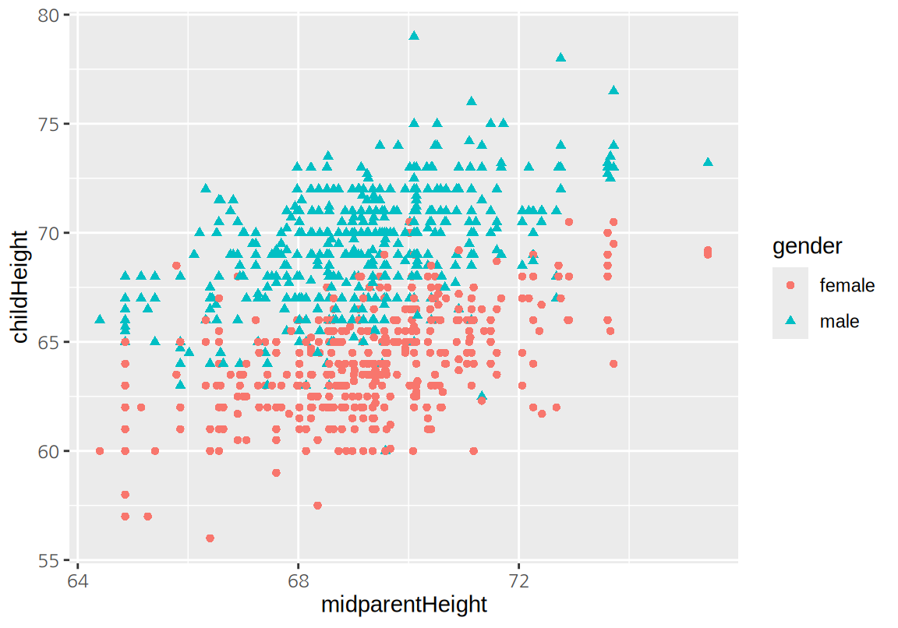
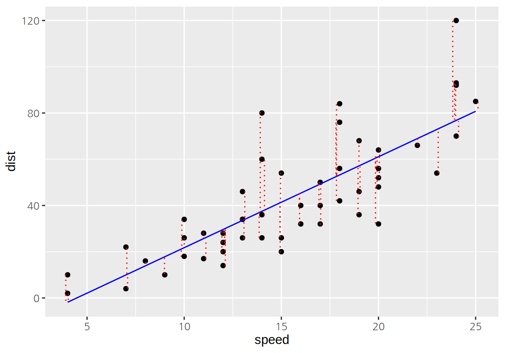
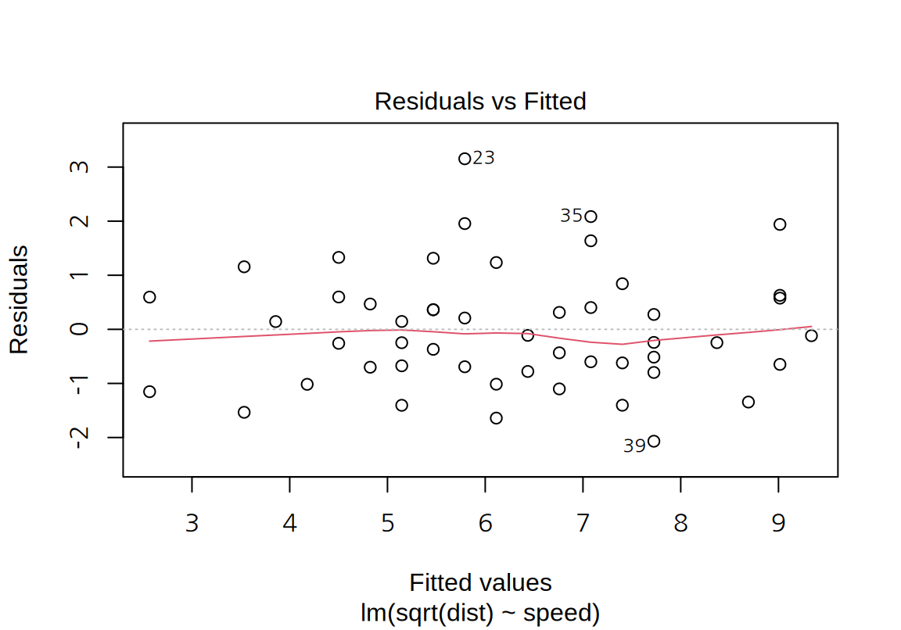
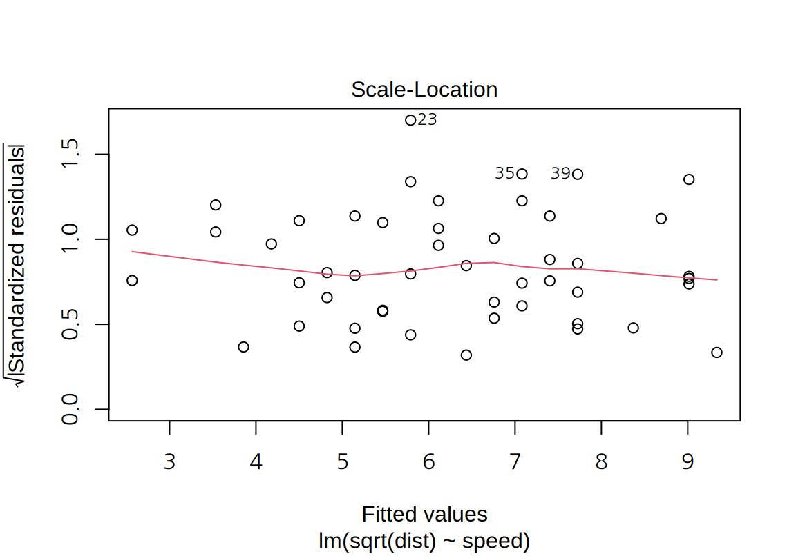
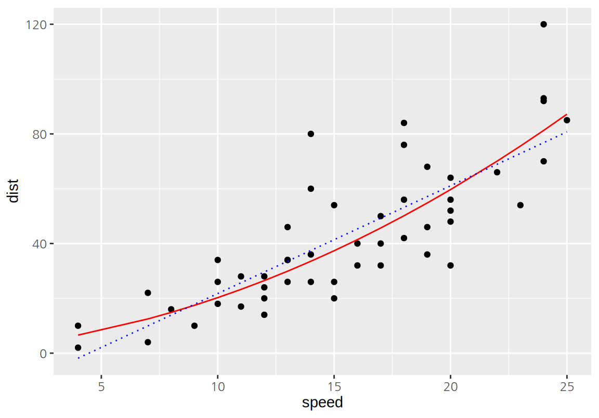
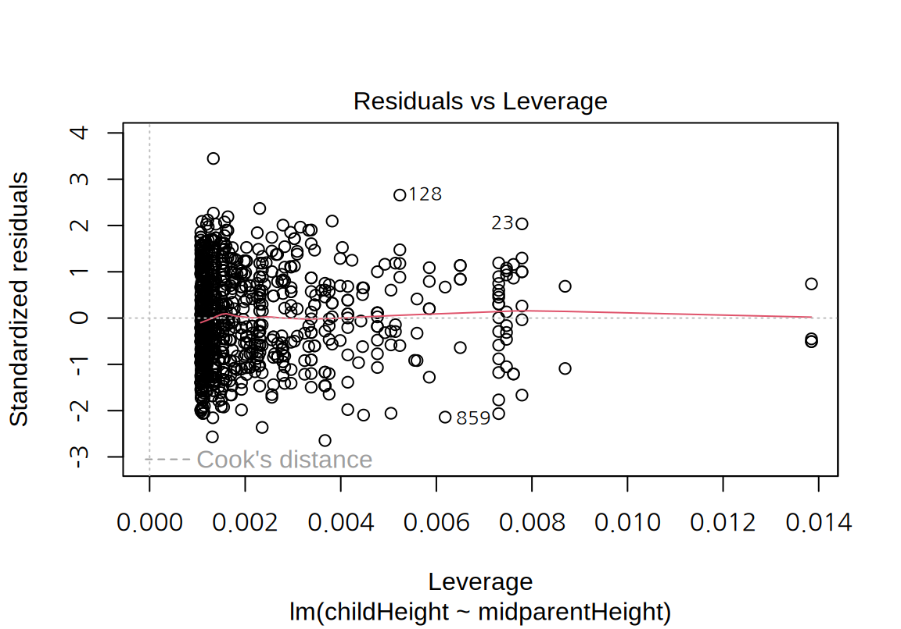
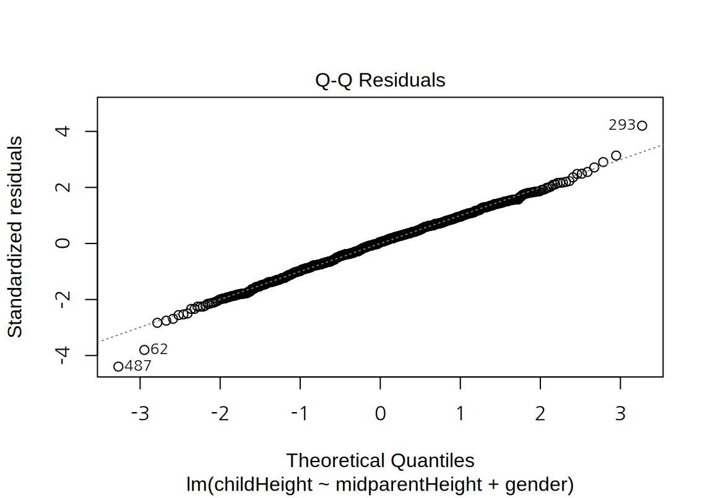
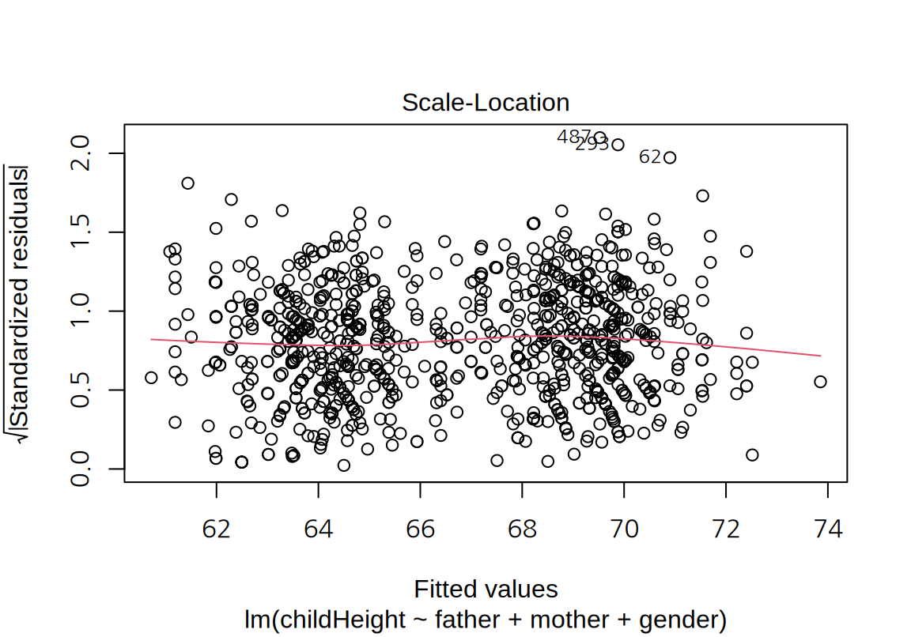

Chapter 17 R 선형 회귀
회귀(Regression) 분석이라는 용어는 영국 유전학자 갈톤이 생각한 문제에서 시작되었다. 갈톤은 부모의 키가 자식의 키에 미치는 영향을 통계적으로 분석하고자 205 가구의 934 명의 자식들의 키를 조사하였고 이에 대한 회귀 법칙을 1886년에 발표하였다(Galton 1886). 데이터를 정리한 갈톤의 공책이 남아있고 공책의 첫 장에 기술한 것처럼 가족별로 아버지, 어머나, 아들, 딸의 키가 60 인치를 기준으로 그보다 초과하는 정도가 기록되어 있다.
우리는 이 데이터를 R의 HistData 패키지의 GaltonFamilies라는 데이터로 쉽게 얻을 수 있다.
다음은 GaltonFamilies 데이터를 보여준다.
이 데이터는 아버지, 어머니, 자식의 키가 모두 인치로 기록되어 있다.
갈톤은 어머니와 딸의 키는 모두 1.08을 곱하여 남자의 키로 환산하 후, 부모의 키와 자식의 키의 관계를 다음과 같은 교차표로 정리하였다.
갈톤의 시대에는 컴퓨터가 없었으므로 200 여개의 데이터를 일일이 표시하고 계산하는 것은 어려운 일이었다. 그러므로 수치 데이터를 구간으로 나누어 빈도를 표현하는 것이 데이터를 분석하기에 편리하였다. 위의 교차표에서 보듯이 부모의 키와 자식의 키는 양의 상관성을 가지고 있어서 우상향하는 관계를 보인다.
컴퓨터가 보편화된 현대에는 더 이상 구간으로 나눈 빈도표에 의존하지 않고, 원 데이터를 직접적으로 이용하여 관계를 탐색할 수 있다.
그리고 남자와 여자의 키를 모두 남자의 키로 환원시키지 않고도 분석할 수 있다.
다음은 부모의 키와 자신의 키를 산점도로 시각화한 것이다.
childHeight는 자식의 키(인치)이고, midparentHeight는 부모의 키(인치)의 평균이다. 어머니의 키가 아버지의 키보다 평균적으로 작기 때문에 어머니의 키에 1.08을 곱하여 남자의 키로 환산한 후 부모의 중간키(midparentHeight)을 계산하였다.
전반적으로 부모의 중간키가 크면 자식의 키도 큰 경향이 보인다.
산점도에서 아들과 딸의 키는 구별될 수 있도록 다른 색과 모양의 점으로 표현하였다.

갈톤은 부모와 자식의 키 사이의 관계를 설명하기 위하여 다음처럼 교차표에서 동일한 빈도를 가지는 영역에 대한 등고선을 그렸다. 그리고 빈도의 크기가 달라져도 모두 동일한 방향으로 축을 가지는 타원으로 등고선이 그려지는 것을 관찰하였다.
이러한 관찰을 통하여 자식의 키에 대한 부모의 키의 설명력이 \(2/3\) 정도이고, 부모의 키가 크거나 작더라도 자식의 키는 어느 정도 평균으로 회귀(regression) 하는 성질이 있다는 것을 주장하였다. 갈톤의 논문이 발표된 후부터 수치형 변수의 선형적 관계를 추정하는 분석을 회귀 분석이라고 불리게 되었다.
우리는 현대적 컴퓨터와 R을 이용하여 갈톤의 원 데이터를 이용하여 부모의 중간키와 자식의 키의 관계에 대하여 다음과 같은 관계식을 도출할 수 잇다.
\[ childHeight = 16.514 + 0.687 \times midparentHeight + 5.215 \times \mathbf{1}(gender = male) \]
- 부모의 키가 1인치 커지면 자신의 키는 평균적으로 0.687 커진다.
- 아들의 키는 딸의 키보다 평균적으로 5.215 인치 더 크다.
부모의 키와 자식의 키의 관계를 나타내는 위의 직선의 방정식은 다음과 같이 시각화 할 수 있다.
선형 회귀(Linear Regression)는 설명하고자 하는 종속변수(자식의 키)를 독립변수(부모의 중간키)로 설명하는 모형으로 독립변수와 종속변수 사이의 선형적 관계를 가정한다.19 그러므로 선형 회귀는 종속변수와 독립변수 사이의 복잡한 비선형 관계를 가정하는 모형에 비하여 단순한 모형처럼 보인다. 그러나 아직도 많이 사용되는 기법의 하나이며, 현대적 통계 분석 기법들은 선형 회귀를 일반화하거나 확장시킨 모형들이 많다. 그러므로 선형 회귀에 대해 명확한 이해하는 것이 복잡한 통계 분석 기법을 이해하는 데 큰 길라잡이가 될 수 있다.
17.1 단순 선형 회귀
17.1.1 cars 데이터
cars 데이터는 1920년대에 자동차의 속도와 제동거리를 측정한 데이터이다.
speed는 자동차의 속도를 mph로 측정한 열dist는 제동거리를 ft로 측정한 열
데이터에 대한 기본 통계치를 구해보자.
speed dist
Min. : 4.0 Min. : 2.00
1st Qu.:12.0 1st Qu.: 26.00
Median :15.0 Median : 36.00
Mean :15.4 Mean : 42.98
3rd Qu.:19.0 3rd Qu.: 56.00
Max. :25.0 Max. :120.00 자동차의 속도와 제동거리의 관계를 탐색하기 위하여 두 열을 사용하여 산점도를 그려보자. 산점도에서 보듯이 자동차의 속도가 증가하면 제동거리도 증가하는 관계가 있다는 것을 확인할 수 있다.

17.1.2 단순 선형 회귀 모형
단순 선형 회귀는 종속변수 \(Y\)를 하나의 독립변수 \(X\)로 설명하는 모형이다.
cars 데이터는 자동차의 제동거리를 속도로 설명하고 있으므로, 종속변수는 dist이고 독립변수는 speed이다.
단순 선형 회귀에서는 예측변수 \(X\)와 반응변수 \(Y\) 간에 근사적으로 선형 관계가 있다고 가정한다.
\[\begin{equation} Y = \beta_0 + \beta_1 X + \varepsilon. \tag{17.1} \end{equation}\] 단, \(\varepsilon\)은 선형 관계로 설명되지 않는 오차항으로 관측 사례마다 독립이고 동일한 정규분포 \(\mathcal{N}(0, \sigma^2)\)을 따른다.
(17.1) 모형을 일컬어 ‘\(Y\)를 \(X\)에 대해 회귀분석한다.’ 라고 한다.
cars 데이터에서 제동거리 dist를 속도 speed에 대하여 회귀분석하는 모형은 다음과 같이 표현된다.
\[ dist \approx \beta_0 + \beta_1 \times speed. \]
단순 선형 회귀는 데이터를 가장 잘 설명하는 모형의 모수 \(\beta_0\)(절편)과 \(\beta_1\)(기울기)를 추정하는 과정이다.
\(X\)와 \(Y\)에 대한 \(n\) 개의 관측치가 있다고 하자. \[ (x_1, y_1), (x_2, y_2), \ldots, (x_n, y_n) \]
단순 선형 회귀의 목적은 주어진 관측치에 대해 (17.1)의 모형을 가장 잘 적합시키는 직선의 방정식, 즉, 절편과 기울기의 추정치 \(\hat{\beta}_0\)와 \(\hat{\beta}_1\)를 찾는 것이다.
다음은 cars 데이터를 설명하는 두 개의 직선을 보여준다.
이 두 직선 중 데이터를 더 잘 설명하는 직선은 무엇일가?
이 질문에 답하기 위해서는 모형이 데이터를 설명하는 정도를 측정할 수 있는 방법이 필요하다.
회귀 모형이 데이터를 설명하는 정도를 측정하는 방법은 여러 가지가 있지만 가장 대표적인 방법이 최소제곱법(least squares)이다. (최소제곱법은 최소자승법이고도 한다.) 선형 회귀 모형은 \(X\)의 \(i\) 번째 값에 대한 \(Y\)의 값을 다음과 같은 직선의 방정식을 사용하여 설명(예측)한다.
\[ \hat{y}_i = \hat{\beta}_0 + \hat{\beta}_1 x_i \]
그런데 데이터에서 실제 관측치 \(y_i\)와 모형의 예측치 \(\hat{y}_i\)는 단순한 데이터가 아니라면 차이가 있기 마련이고, 관측치와 예측치의 차이를 잔차(residuals)라고 한다. \(e_i\)를 \(i\) 번째 잔차라고 하면 다음과 같이 표현된다.
\[ e_i = y_i - \hat{y}_i \]
다음은 cars 데이터에서 선형 회귀 모형의 잔차를 점선으로 보여준다.

모형의 모든 잔차의 제곱의 합을 RSS(the residual sum of squares) 또는 SSE(the error sum of squares)라고 한다.
\[ \begin{split} RSS &= e_1^2 + e_2^2 + \cdots + e_n^2 \\ &= (y_1 - \hat{\beta}_0 - \hat{\beta}_1 x_1)^2 + (y_2 - \hat{\beta}_0 - \hat{\beta}_1 x_2)^2 + \cdots + (y_n - \hat{\beta}_0 - \hat{\beta}_1 x_n)^2. \end{split} \]
최소제곱법에서는 RSS를 최소화하는 \(\hat{\beta}_0\)과 \(\hat{\beta}_1\)를 선택하고, 그 값은 다음과 같다.
\[\begin{align} \hat{\beta}_1 &= \frac{\sum_{i=1}^{n} (x_i - \bar{x})(y_i - \bar{y})}{\sum_{i=1}^{n} (x_i - \bar{x})^2} \\ \hat{\beta}_0 &= \bar{y} - \hat{\beta}_1 \bar{x}, \end{align}\] 단, \(\bar{y} = \frac{\sum_{i=1}^{n} y_i}{n}\)이고 \(\bar{x} = \frac{\sum_{i=1}^{n} x_i}{n}\)이다.
17.1.3 lm() 함수
R의 기본 패키지인 stats의 lm() 함수는 선형 회귀 모형을 데이터에 적합한다.
formula인수: 첫 번째 인수로 데이터에서 종속변수로 사용할 열과 독립변수로 사용할 열을 수식이라는 형태로 설정한다. 단순 선형 회귀에서 수식은종속변수_열 ~ 독립변수_열형식으로 지정된다.data인수: 선형 회귀 모형을 적합할 때 사용할 데이터를 설정한다.
다음은 cars 데디터에서 dist 열을 종속변수로 speed 열을 독립변수로 하는 선형 회귀 모형을 적합한 결과이다.
Call:
lm(formula = dist ~ speed, data = cars)
Coefficients:
(Intercept) speed
-17.579 3.932 출력된 결과에서 Call: 영역은 lm() 함수가 어떻게 호출되었는지에 대한 정보이다.
Coefficients:는 추정된 절편(Intercept)과 독립변수(speed)의 기울기이다.
즉, 잔차제곱합을 최소화하는 모형은 다음과 같은 직선이다.
\[ dist = -17.579 + 3.932 \, speed \]
선형 회귀 모형에 따르면 자동차의 속도가 1 mph 증가할 때마다 평균적으로 제동거리는 3.932 ft 늘어난다.
lm() 함수의 결과는 출력된 정보 이외에도 다양한 요소를 가지고 있다.
$coefficients: 회귀 모형의 계수$residuals: 관측 사례별 모형의 잔차$fitted.values: 관측 사례별 모형의 예측값
(Intercept) speed
-17.579095 3.932409 1 2 3 4 5 6 7
3.849460 11.849460 -5.947766 12.052234 2.119825 -7.812584 -3.744993
8 9 10 11 12 13 14
4.255007 12.255007 -8.677401 2.322599 -15.609810 -9.609810 -5.609810
15 16 17 18 19 20 21
-1.609810 -7.542219 0.457781 0.457781 12.457781 -11.474628 -1.474628
22 23 24 25 26 27 28
22.525372 42.525372 -21.407036 -15.407036 12.592964 -13.339445 -5.339445
29 30 31 32 33 34 35
-17.271854 -9.271854 0.728146 -11.204263 2.795737 22.795737 30.795737
36 37 38 39 40 41 42
-21.136672 -11.136672 10.863328 -29.069080 -13.069080 -9.069080 -5.069080
43 44 45 46 47 48 49
2.930920 -2.933898 -18.866307 -6.798715 15.201285 16.201285 43.201285
50
4.268876 1 2 3 4 5 6 7 8
-1.849460 -1.849460 9.947766 9.947766 13.880175 17.812584 21.744993 21.744993
9 10 11 12 13 14 15 16
21.744993 25.677401 25.677401 29.609810 29.609810 29.609810 29.609810 33.542219
17 18 19 20 21 22 23 24
33.542219 33.542219 33.542219 37.474628 37.474628 37.474628 37.474628 41.407036
25 26 27 28 29 30 31 32
41.407036 41.407036 45.339445 45.339445 49.271854 49.271854 49.271854 53.204263
33 34 35 36 37 38 39 40
53.204263 53.204263 53.204263 57.136672 57.136672 57.136672 61.069080 61.069080
41 42 43 44 45 46 47 48
61.069080 61.069080 61.069080 68.933898 72.866307 76.798715 76.798715 76.798715
49 50
76.798715 80.731124 단순 선형 회귀 모형은 독립변수가 하나이므로, 독립변수를 가로축으로 종속변수를 세로축으로 하는 산점도를 그린 후 모형을 나타내는 직선을 그려 모형이 데이터를 적절히 설명하는지를 시각적으로 탐색해 볼 수 있다.
단순 선형 회귀 모형의 직선을 ggplot2 그래프에 표현하는 방법은 다음 세 가지가 있다.
geom_smooth(method="lm")으로 선형 회귀 모형 결과로 추세선을 그린다.geom_abline()으로 선형 회귀 모형의 계수를 이용하여 직선을 그린다.geom_line()으로 모형의 예측값을 직선으로 나타낸다.
다음은 geom_smooth()로 회귀적합선을 그린 예이다.
geom_smooth()는 회귀적합선뿐 아니라 95% 신뢰구간도 함께 표시해 준다.
신뢰구간을 표시하지 않으려면 se=FALSE 인수를 설정한다.
`geom_smooth()` using formula = 'y ~ x'geom_abline()은 절편(intercept)과 기울기(slope)를 지정하여 직선을 그린다.
lm()의 결과의 $coefficients 요소는 모형의 절편과 기울기를 벡터로 가지고 있으므로 이를 사용하여 geom_abline()으로 직선을 그린다.
ggplot(cars, aes(speed, dist)) +
geom_point() +
geom_abline(intercept=lm_cars$coefficients[1], slope=lm_cars$coefficients[2],
color="red")geom_line() 함수는 관측점 사이를 직선으로 연결해 준다.
다음에서 geom_point()는 원래의 독립변수와 종속변수 값을 x와 y로 매핑하여 관측점을 표시하였고, geom_line()은 독립변수는 원래의 값을 x에, 모형의 예측값을 y에 매핑하여 선을 그렸다. 모형이 직선이므로 예측값을 이은 선분도 하나의 직선 위에 표시된다.
geom_abline()은 직선의 절편과 기울기로 직선을 그린 것이므로 좌표평면을 모두 가로질러 그려졌지만, geom_line()은 관측사례의 에측값을 선분으로 이어 그린 것이기 때문에 데이터의 범위 안에서만 직선이 그려진다.
geom_smooth()로 그린 직선도 데이터의 범위 안에서만 그려졌는데, geom_line()과 마찬가지로 모형의 예측값을 선분으로 이어 그리기 때문이다.
17.1.4 선형 회귀 모형의 평가
선형 회귀는 모형의 계수가 추정된 것으로 끝나는 것이 아니라, 모형의 유용성에 대한 평가를 해 봐야 한다. 모형의 유용성에 대한 주요한 평가 항목은 다음과 같다.
- 모형의 통계적 유의성
- 모형의 설명력
- 모형의 예측력
- 모형의 기본 가정의 위배성
모형의 통계적 유의성에 대한 가설검정
선형 회귀 모형은 독립변수가 종속변수에 영향을 미친다는 가정 하에 종속변수의 변화를 설명한다. 그러므로 데이터에 의해 이러한 가정이 지지되는지 검정해 보아야 한다. 모형의 통계적 유의성은 다음과 같은 가설검정을 수행하는 것이다.
\(H_0\): 모형의 독립변수는 종속변수에 영향을 미치지 않는다.
\(H_1\): 모형의 독립변수는 종속변수에 영향을 미친다.
위의 가설검정은 검정통계량 \(F\)를 계산하여 수행한다.
\[\begin{equation} F = \frac{(TSS - RSS) / p }{RSS/ (n-p-1)} \end{equation}\] 단, \(n\)은 관측 사례의 수, \(p\)는 독립변수의 수인데 단순 회귀 모형에서는 \(p=1\)이며, \(TSS\), \(RSS\) 등은 다음과 같이 정의된다. \[\begin{align*} TSS &= \sum_{i=1}^{n} (y_i - \bar{y})^2 \\ RSS &= \sum_{i=1}^{n} (y_i - \hat{y}_i)^2 \\ TSS - RSS &= \sum_{i=1}^{n} (\hat{y}_i - \bar{y})^2. \end{align*}\]
\(TSS\)는 총제곱합(the total sum of squares)을 나타내는데 종속변수의 총 변동성을 측정한다. 종속변수의 총 변동성은 자신의 평균과의 관측값 사이의 편차의 제곱의 합으로 구한다. \(RSS\)는 17.1.2에서 설명한 바와 같이 종속변수의 관측값과 모형의 예측값 사이의 차이인 잔차를 제곱하여 합한 값으로, 모형이 설명하지 못한 종속변수의 변동성을 측정한다. \(TSS - RSS\)는 모형이 설명한 종속변수의 변동성을 의미한다. 그러므로 \(F\)의 분모는 모형이 설명한 종속변수의 변동성과 관련된 항이고, 분자는 모형이 설명 못한 종속변수의 변동성과 관련된 항이다. \(F\)의 분모와 분자에 있는 \(p\)와 \(n-p-1\)은 귀무가설이 맞을 때 분모와 분자의 크기의 평균이 동일해지도록 하는 정규화 인수이다. 따라서 귀무가설이 맞으면 \(F \approx 1\)이 되고 대립가설이 맞으면 모형이 설명하는 변동성이 점차 커져서 \(F >> 1\)이 된다.
선형 회귀 모형의 기본 가정이 만족되면 검정통계량 \(F\)는 자유도가 \((p, n-p-1)\)인 F 분포를 따른다. \(F_\alpha\) 값을 다음처럼 정의하자. \[ \Pr (F > F_\alpha) = \alpha \] 그러면 유의수준 \(\alpha\)에서 모형의 유의성에 대하여 가설검정한다면 \(F \le F_\alpha\)이면 귀무가설을 \(F > F_\alpha\)이면 대립가설을 채택한다.
모형의 유의성에 대한 가설검정 결과는 lm()의 결과를 summary() 함수로 출력하면 알 수 있다.
이에 대해서는 후술하기로 한다.
단순 선형 회귀 모형에서는 lm()의 결과를 anova() 함수에 전달하여 F-검정의 결과를 쉽게 확인할 수 있다.
Analysis of Variance Table
Response: dist
Df Sum Sq Mean Sq F value Pr(>F)
speed 1 21186 21185.5 89.567 1.49e-12 ***
Residuals 48 11354 236.5
---
Signif. codes: 0 '***' 0.001 '**' 0.01 '*' 0.05 '.' 0.1 ' ' 1출력된 분산분석표(Analysis of Variance Table)의 의미는 다음과 같다.
Response:는 분산분석표가 어떤 종속변수에 대한 변동성(분산)을 분석했는지를 출력한다. 이 예에서는 제동거리(dist)의 분산을 분석한 것이다.- 분산분석표는 두 개의 행으로 되어 있는데, 위의 행은 종속변수의 변동성(분산)이 독립변수(
speed)에 의해 설명된 부분으로 \(F\) 통계량의 분자에 해당하고, 아래 행은 모형에서 설명하지 못하고 잔차(Residuals)로 남아있는 부분으로 \(F\) 통계량의 분모에 해당한다. - 분산붆석표의
Df는 \(F\)의 분자와 분모의 자유도를 나타내며 이 값은 \(p\)와 \(n-p-1\)이다. 이 예에서는 \(p=1\)이고 \(n=50\)이므로 1과 48로 계산되었다. - 분산분석표의
Sum Sq는 제곱합을 나타내는 열로, 위의 행은 \(TSS-RSS\)이고 아래 행은 \(RSS\)이다. - 분산분석표의
Mean Sq는 제곱합을 정규화 인자로 나눈 값으로 \((TSS-RSS)/p\)와 \(RSS/(n-p-1)\)로 \(F\) 통계량의 분자와 분모의 값이다. - 분산분석표의
F value는 \(F\) 통계량 값이다. - 분산분석표의
Pr(>F)는 F-분포에서 \(F\) 통계량보다 큰 값을 가질 확률이다. 이 값은 귀무가설 하에서 검정통계량에서 얼마나 예외적인 값이 발생했는지를 보여주는 p-값이다. 이 값이 매우 작으면 귀무가설로 설명하기에는 예외적인 데이터가 발생한 것으로 간주하여 대립가설을 채택한다. - 분산분석표의
Pr(>F)의 별표는 아래Signif. codes:에 기술된 것처럼 p-값의 크기를 나타내며, 대립가설을 지지하는 통계적 유의성의 정도를 보여준다.***이면 p-값이 0.001보다 작다. 그리므로 귀무가설 하에 0.1% 이하로 발생하는 사건이 발생하였음을 의미한다.**이면 p-값이 0.001보다는 크고 0.01 이하*이면 p-값이 0.01보다는 크고 0.05 이하.이면 p-값이 0.05보다 크고 0.1 이하- 아무 표시도 없으면 p-값이 0.1보다 크다.
분산분석 결과 p-값이 0.001보다도 작으므로 독립변수(speed)는 종속변수(dist)에 통계적으로 유의미한 영향력를 가지고 있다는 대립가설을 채택한다.
모형의 설명력에 대한 평가
모형의 통계적 유의성에 대한 검정은 독립변수가 종속변수에 유의미한 영향의 유무를 평가하는 것이지, 영향력의 크기는 평가하지 않는다. 그렇기 때문에 통계적으로 유의미한 모형이라도 종속변수의 변동성의 일부만을 설명할 수 있다. 예를 들어 가계의 소비지출액을 가구원의 라이프 스타일로 설명하는 회귀 모형을 만들었다고 하자. 라이프 스타일이 가구원의 소비 행태에 영향을 미치기 때문에 이 모형은 통계적으로 유의미한 모형이 될 수 있다. 그러나 소비지출에 가장 큰 영향력을 미치는 가계의 소득수준이 빠져있기 때문에 이 모형의 소비지출액에 대한 설명력은 제한될 것이다.
모형의 설명력을 평가하는 대표적인 척도가 결정계수(the coefficient of determination) \(R^2\)이다. \(R^2\)은 종속변수의 총 변동성(TSS) 중 모형에 의해 설명된 변동성(TSS-RSS)의 비율이다.
\[\begin{equation} R^2 = \frac{TSS-RSS}{TSS} = 1 - \frac{RSS}{TSS} \end{equation}\]
\(R^2\)은 0과 1 사이의 값을 가지며, 모형의 설명력이 커질수록 1에 가까워진다. 단순 선형 회귀 모형에서는 독립변수와 종속변수의 상관계수 \(r\)은 \(R^2\)와 \(R^2 = r^2\)의 관계를 가진다.
\(R^2\) 척도에 대한 감각을 얻기 위하여 동일한 관계를 가지는 다음 세 가지 시뮬레이션 데이터를 비교해 보자. 세 사례는 모두 \(y = 2 + 3x\) 관계에 오차항으로 표준편차가 1, 2, 4인 정규분포를 더하여 데이터를 생성한 것이다.
sigma_1 sigma_2 sigma_4
0.9109236 0.7146256 0.4292769 모형으로 설명될 수 없는 오차항의 표준편차가 커질수록 회귀모형에 의해 설명되는 부분이 줄어드는 것을 확인할 수 있다.
그러면 어느 정도의 \(R^2\) 값이어야 모형 종속변수를 잘 설명하는 것일까? 이는 문제 상황에 따라 달라진다. 물리 실험 같이 여러 요인을 통제할 수 있는 상황에서 얻은 데이터에서는 \(R^2\)가 맨 왼편의 사례처럼 1에 가까워야 한다. 반면 마케팅, 사회과학의 인과관계의 조사처럼 통제할 수 있는 많은 변인들이 존재하는 경우에는 맨 오른편의 사례처럼 훨씬 더 낮은 \(R^2\) 값을 보인다. 그러므로 \(R^2\)의 적절성은 선행 연구와 도메인 지식을 사용하여 판단해야 한다.
모형의 설명력을 평가하는 또 다른 방법은 모형 오차항의 절대적 크기를 측정하는 것이다. 선형 회귀 모형에서 오차항 \(\varepsilon\)은 정규분포 \(\mathcal{N}(0, \sigma^2)\)을 따르다고 가정하므로, \(\sigma\)의 값이 클수록 모형이 설명하지 못하는 종속변수의 절대적 양이 크다는 것을 의미한다. 오차항의 표준편차 \(\sigma\)는 잔차의 표준오차인 RSE(Residual Standard Error)로 추정한다. RSE는 잔차제곱합(RSS)을 이용하여 다음과 같이 정의된다.
\[\begin{equation} RSE = \sqrt{\frac{1}{n-p-1} RSS} = \sqrt{\frac{1}{n-p-1} \sum_{i=1}^{n-2} (y_i - \hat{y}_i)^2} \end{equation}\]
RSE는 데이터가 모회귀선에서 평균적으로 얼마큼 떨어져 있는지에 대한 추정치이다. \[ E[RSE] = \sigma \]
다음은 앞서 \(R^2\)을 설명할 때 소개한 \(y = 2 + 3x\) 관계에 오차항으로 표준편차가 1, 2, 4인 정규분포를 더한 사례에서의 RSE의 추정치를 보여준다. 오류항의 표준편차 1, 2, 4와 가까운 값이 추정되었다.
sigma_1 sigma_2 sigma_4
1.021690 2.098794 3.935712 RSE의 크기는 종속변수의 측정 척도에 따라 달라지므로, 모형의 상대적 적합성을 확인할 때는 다음처럼 종속변수의 평균 대비 잔차의 표준오차를 비율을 계산하기도 한다. \[ RSE/(\text{종속변수 평균}) \]
lm() 결과를 summary() 함수로 요약하면 \(R^2\)와 RSE 값을 확인할 수 있다.
Call:
lm(formula = dist ~ speed, data = cars)
Residuals:
Min 1Q Median 3Q Max
-29.069 -9.525 -2.272 9.215 43.201
Coefficients:
Estimate Std. Error t value Pr(>|t|)
(Intercept) -17.5791 6.7584 -2.601 0.0123 *
speed 3.9324 0.4155 9.464 1.49e-12 ***
---
Signif. codes: 0 '***' 0.001 '**' 0.01 '*' 0.05 '.' 0.1 ' ' 1
Residual standard error: 15.38 on 48 degrees of freedom
Multiple R-squared: 0.6511, Adjusted R-squared: 0.6438
F-statistic: 89.57 on 1 and 48 DF, p-value: 1.49e-12summary() 결과는 다음 정보를 보여준다.
Call:영역은lm()함수 호출 정보Residuals:영역은 모형의 잔차의 기본 통계량 정보Coefficients:영역은 모형의 계수 정보로 절편과 기울기에 대한 추정값(Estimate), 추정값의 표준 오차(Std. Error), t-검정량(t value), t-검정량의 p-값(Pr(>|t|))을 제공Residual standard error:는 RSE 값과 RSE의 자유도 정보Multiple R-squared:는 \(R^2\) 값Adjusted R-squared:는 독립변수의 수에 따라 조정된 \(R^2\) 값으로 변수 선택을 할 때 이용된다.F-statistic:는 모형의 유의성에 대한 \(F\)-검정통계량p-value:는 F-검정통계량의 p-값
speed로 dist를 설명하는 선형 회귀 모형은 dist의 변동성 중 65.1% 설명하고 있으며, 모형의 RSE는 15.38였다.
dist의 평균 대비 RSE의 크기는 약 0.36이다.
[1] 0.3578409모형의 예측력에 대한 평가
모형의 계수를 추정할 때 사용한 데이터를 훈련집합이라고 한다. 모형의 예측력에 대한 평가를 훈련집합으로 하게 되면 모형의 성능을 과대평가하게 된다. 그러므로 훈련집합과 별도의 데이터로 모형의 예측력을 평가해 봐야 한다. 이렇듯 모형의 훈련집합과 별개로 모형의 예측성능을 평가할 때 사용하는 데이터를 평가집합이라고 한다.
앞의 예에서는 cars의 모든 데이터로 모형을 적합하였다.
이번에는 cars의 데이터를 무작위 추출로 7:3 비율로 훈련집합과 평가집합으로 나눠보자.
sample() 함수는 벡터의 요소를 무작위 추출해 준다.
x인수는 첫 번째 인수로 무작위 추출을 할 벡터가 지정된다. 1보다 큰 자연수가 입력되면1:x벡터를 이용하여 무작위 추출된다.size인수는 무작위 추출의 횟수replace인수는 복원 추출 여부인데, 기본값은replace=FALSE로 비복원 추출을 한다.prob는 벡터의 각 요소가 추출될 확률을 나타낸다. 기본값은NULL로 모든 요소가 동일한 확률로 추출된다.
cars의 행의 수는 nrow(cars)이므로 1부터 시작하여 nrow(cars)까지의 자연수에서 15 개를 무작위 추출하여 평가집합으로 할당하자.
[1] 31 15 14 3 42 43 37 48 25 26 27 5 40 28 9 speed dist
31 17 50
15 12 28
14 12 24
3 7 4
42 20 56
43 20 64
37 19 46
48 24 93
25 15 26
26 15 54
27 16 32
5 8 16
40 20 48
28 16 40
9 10 34 speed dist
1 4 2
2 4 10
4 7 22
6 9 10
7 10 18
8 10 26
10 11 17
11 11 28
12 12 14
13 12 20
16 13 26
17 13 34
18 13 34
19 13 46
20 14 26
21 14 36
22 14 60
23 14 80
24 15 20
29 17 32
30 17 40
32 18 42
33 18 56
34 18 76
35 18 84
36 19 36
38 19 68
39 20 32
41 20 52
44 22 66
45 23 54
46 24 70
47 24 92
49 24 120
50 25 85그런 다음 훈련집합으로 선형 회귀 모형을 적합한다.
Call:
lm(formula = dist ~ speed, data = train_df)
Coefficients:
(Intercept) speed
-16.54 3.92 이 모형으로 평가집합을 예측한 후, 모형의 예측값과 실제 관측값을 비교해 보자.
predict() 함수에 모형과 예측할 데이터를 지정하면 독립변수만 사용하여 모형으로 종속변수를 예측한다.
31 15 14 3 42 43 37 48
50.10037 30.50099 30.50099 10.90161 61.86000 61.86000 57.94013 77.53951
25 26 27 5 40 28 9
42.26062 42.26062 46.18050 14.82148 61.86000 46.18050 22.66124 forecast 패키지의 accuracy() 함수는 다양한 지표로 예측성능을 평가해 준다.
먼저 forecast 패키지를 설치하자.
accuracy() 함수는 다음 두 인수를 입력 받는다.
- 첫 번째 인수는 예측한 값
- 두 번째 인수는 실제 관측값
Registered S3 method overwritten by 'quantmod':
method from
as.zoo.data.frame zoo ME RMSE MAE MPE MAPE
Test set -2.828571 9.933897 8.409524 -20.92935 31.91902- ME(mean errors)는 오차의 평균이다.
- RMSE(root mean squared errors)는 오차 제곱의 평균을 제곱근한 값이다.
- MAE(mean absolute errors)는 오차의 절대값의 평균이다.
- MPE(mean percentage errors)는 관측값 대비 오차의 백분율을 평균한 것이다.
- MAPE(mean absolute percentage errors)는 관측값 대비 오차의 백분율을 절대값을 취한 후 평균한 것이다.
다음은 평가집합에서 모형의 회귀적합선과 실제 관측값을 보여준다.
모형의 기본 가정의 확인
선형 회귀 모형과 관련된 가설검정은 다음과 같은 가정이 만족될 때만 성립한다.
- 독립변수와 종속변수 관계의 선형성
- 오류항의 정규성, 독립성, 분산의 동일성. 즉, 오류항이 독립이고 동일한 정규분포 \(\mathcal{N}(0, \sigma^2)\)을 따라야 한다.
이러한 기본 가정은 주로 잔차 그래프를 그려서 확인한다. 잔차 그래프는 모형의 기본 가정의 확인뿐 아니라 특이점(outliers)과 영향점(influential points)이 있는지를 파악하게 해준다. 선형 회귀 모형에서 특이치는 두 가지 관점에서 생각해 볼 수 있다.
- 종속변수의 값이 모형의 예측에서 벗어나는 특이한 관측치
- 독립변수 측면에서 다른 사례들의 경향에서 벗어나 있는 관측치
종속변수 측면의 이상치를 특이점이라 하고, 표준화된 잔차(standardized residuals)를 사용하여 파악한다. 표준화된 잔차의 절대값이 2, 3 이상이면 특이점으로 간주한다.
독립변수 측면에서의 이상치는 레버리지(leverage) 또는 hat-value를 계산하여 파악한다. 레버리지의 평균은 \(p/n\)인데 이보다 2, 3배 크면 독립변수 측면에서의 특이치로 간주한다.
한 관측 사례는 종속변수와 독립변수 측면에서 모두 특이치가 아닐 수 있으며, 종속변수 측면에서만 특이치이거나, 독립변수 측면에서만 특이치일 수 있다. 관측 사례가 종속변수와 독립변수 측면에서 모두 특이치인 경우에는 선형 회귀 모형의 결과에 매우 큰 영향을 미칠 가능성이 커진다.
영향점은 선형 회귀 모형의 결과에 크게 영향을 주는 관측치로서, 이 점이 제외되면 선형 회귀 모형의 계수가 크게 바뀐다. Cook 거리는 관측치의 유무에 따라 회귀계수의 변화 정도를 측정하는데, R의 기본 패키지에서는 Cook 거리가 \(F_{0.5, p, n-p} \approx 1\)에 근접하면 영향점으로 간주한다. 데이터에서 특이점과 영향점이 있으면 이 관측치가 올바른지 확인해 보고 주의깊게 탐색해 보아야 한다.
모형의 선형성과 오차항의 가정에 대한 탐색뿐 아니라, 특이점과 영향점처럼 선형 회귀 모형에서 나타날 수 있는 많은 문제를 잔차 그래프를 분석함으로써 어느 정도 확인이 가능하다.
lm() 결과를 plot() 함수의 첫 번째 인수로 전달하면 잔차를 다양한 형식으로 시각화를 해 준다.
plot() 함수의 which 인수를 1부터 6까지 설정하여 서로 다른 관점의 6 개의 잔차 그래프를 그릴 수 있다.
- “Residuals vs Fitted”, aka ‘Tukey-Anscombe’ plot:
- 모형의 예측값을 가로축으로 잔차를 세로축으로 하는 산점도이다.
- 독립변수와 종속변수 사이의 비선형 관계가 있는지를 탐색하거나 잔차의 등분산성을 탐색하기 위해 사용한다.
- 잔차가 별다른 경향이 없이 분포되어 있으면 모형의 선형성이 어느 정도 만족되는 것으로 판단한다.
- 잔차가 비선형적인 패턴을 보이면 독립변수와 종속변수 사이의 비선형적 관계가 있는 것을 암시한다. 이 경우에는 독립변수를 변환하여 비선형 항을 모형에 도입하거나 종속변수의 변환을 시도해 본다.
- 잔차가 종속변수의 예측값에 따라 일정한 분산을 가지고 있으면 어느 정도 등분산성이 만족되는 것으로 판단한다.
cars데이터에 대한 단순 선형 회귀 모형의 잔차 그래프에서 아주 약한 비선형성이 감지된다. 그리고 종속변수의 예측값이 커질수록 잔차의 분포가 점차 커지는 경향이 나타난다.
- “Residual Q-Q” plot:
- 표준화된 잔차를 세로축에 이론적인 표준정규분포의 값을 가로축으로 하는 Q-Q (Quantile-Quantile) 도표를 그리는데, 잔차의 정규성을 탐색하는데 사용된다.
- 잔차가 정규분포에 가까우면 Q-Q 도표을 가로지르는 점선에 가깝게 데이터가 놓인다.
cars데이터에 대한 단순 선형 회귀 모형은, 잔차가 큰 양수일 때 정규분포에서 약간 벗어나는 경향을 보인다.- 잔차의 정규성은 Q-Q 도표뿐 아니라 Shapiro 검정을 이용해서도 파악해 볼 수 있다. Shapiro 검정은 데이터가 정규분포를 따른다는 귀무가설을 가설검정한다. 다음 예에서는 p-값이 0.05보다 작아서 유의수준 5%에서 표준화 잔차가 정규분포를 따른다는 귀무가설이 기각된다.

Shapiro-Wilk normality test
data: rstandard(lm_cars)
W = 0.94518, p-value = 0.0217- “Scale-Location” plot:
- 모형의 예측값을 가록축, 표준화된 잔차의 절대값의 제곱근을 세로축으로 하는 그래프이다. 잔차의 절대값에 제곱근을 취하는 이유는 잔차의 절대값의 분포가 왼쪽으로 치우친 분포이기 때문에 왜도를 줄이기 위해서이다.
- 잔차의 등분산성을 확인하기 위하여 모형의 예측값에 무관하게 잔차의 분산이 일정한지 확인한다.
cars데이터에 대한 단순 선형 회귀 모형은 예측값이 커지면 잔차의 분산이 약간 증가하는 경향을 보인다.
4. “Cook’s distance” plot:
- 관측 사례의 순서대로 Cook 거리를 시각화 한다.
- 다음은 cars 데이터의 단순 선형 회귀 모형의 Cook 거리 도표이다. Cook 거리가 1에 근접하는 영향점은 보이지 않는다.
- “Residuals vs Leverage” plot:
- 가로축은 레버리지, 세로축은 표준화된 잔차를 시각화하여 독립변수와 종속변수 측면의 특이치가 있는지를 살펴볼 수 있다.
cars데이터의 그래프에서 표준화된 잔차의 절대값이 2보다 큰 관측치는 23, 39, 49 번 관측치로서 종속변수 측면에서 특이치라 할 수 있다. \(p=1\)이고 \(n=50\)이므로 레버리지의 평균은 0.02인데 23과 39 번은 레버리지가 평균의 2 배 이내이므로 독립변수 측면에서 특이치라 보기 어렵다. 반면 49 번은 레버리지도 평균의 3 배 정도로 독립변수 측면에서도 어느 정도 특이치라 할 수 있다. 그러므로 49 번은 모형의 계수에 영향을 주는 관측치이다. 그렇기 때문에 4 번째 그래프에서도 Cook 거리가 가장 크게 나왔다.
- “Cook’s dist vs Lev./(1-Lev.)” plot:
- Cook 거리, 레버리지, 표준화된 잔차를 한 그래프에서 시각화한다. 가로축은 레버리지, 세로축은 Cook 거리이다. 점선의 등고선은 표준화된 잔차이고 그래프의 오른편과 상단에 등고선이 나타내는 표준화된 잔차의 크기를 보여준다.
cars데이터의 예에서는 49 번 데이터는 가장 높은 Cook 거리를 보여주고 있고 표준화된 잔차의 등고선 3 근처에 있다.
다음처럼 which 인수를 지정하지 않으면 1, 2, 3, 5 번 그래프가 차례로 출력된다.


17.1.5 모형의 개선
cars 데이터에 대한 단순 선형 회귀 모형은 통계적 유의성도 있었고 적절한 설명력도 가진 모형이지만, 잔차 분석해 본 결과 다음의 문제점이 있었다.
- 잔차에서 비선형적 경향이 나타난다.
- 표준화 잔차가 정규분포를 따르지 않는다.
- 잔차의 분산이 동일하지 않다.
이러한 문제점이 심각한 정도는 아니지만 모형이 개선될 수 있는지 탐색해 보자. 잔차의 등분산성이 만족되지 않을 때는 종속변수의 변환을 고려해 볼 수 있다. 특히 종속변수가 양수이고 종속변수의 크기가 커질수록 잔차의 분산이 점차 커지면 제곱근이나 로그 변환을 고려해 본다.
잔차의 분산이 크게 증가하지는 않으므로 다음과 같이 제동거리를 제곱근으로 변환하는 모형을 탐색해 보자.
\[ \sqrt{dist} = \beta_0 + \beta_1 \, speed + \varepsilon \]
다음은 dist를 제곱근 변환한 선형 모형을 적합한 결과이다.
Call:
lm(formula = sqrt(dist) ~ speed, data = cars)
Coefficients:
(Intercept) speed
1.2771 0.3224 모형의 통계적 유의성과 설명력을 파악하기 위하여 summary() 함수로 모형을 요약해 보자.
Call:
lm(formula = sqrt(dist) ~ speed, data = cars)
Residuals:
Min 1Q Median 3Q Max
-2.0684 -0.6983 -0.1799 0.5909 3.1534
Coefficients:
Estimate Std. Error t value Pr(>|t|)
(Intercept) 1.27705 0.48444 2.636 0.0113 *
speed 0.32241 0.02978 10.825 1.77e-14 ***
---
Signif. codes: 0 '***' 0.001 '**' 0.01 '*' 0.05 '.' 0.1 ' ' 1
Residual standard error: 1.102 on 48 degrees of freedom
Multiple R-squared: 0.7094, Adjusted R-squared: 0.7034
F-statistic: 117.2 on 1 and 48 DF, p-value: 1.773e-14F-검정의 p-값이 매우 작아서 독립변수가 종속변수에 대해 통계적으로 유의한 영향을 주고있음을 확인할 수 있다. 아울러 \(R^2\)의 값도 0.651에서 0.709로 증가하여 모형의 설명력도 증가하였다.
잔차 분석을 위하여 잔차 그래프를 그려보면, 잔차에 있던 비선형적 패턴과 잔차의 분산이 종속변수의 예측값이 커지는 경향이 거의 사라진 것을 볼 수 있다.

아울러 표준화 잔차의 Q-Q 도표도 점선에 더 가까워진 것을 볼 수 있다. Shapiro 검정을 한 결과도 p-값이 커서 표준화 잔차가 정규분포를 따른다는 귀무가설이 채택된다.
Shapiro-Wilk normality test
data: rstandard(lm_cars_trans)
W = 0.97386, p-value = 0.3298종속변수를 제곱근 변환한 모형은 원래의 모형이 가지고 있던 대부분의 문제를 해결했으므로, 이 모형을 최종 모형으로 선택할 수 있을 것이다. 이 모형을 산점도에 표시해 보자. 이 때 주의할 점은 제곱근 변환한 모형으로 종속변수를 예측값을 구하려면 모형의 예측값을 제곱해야 한다는 것이다. 다음 그래프에서 보듯이 직선 형태의 원래의 모형보다 데이터에 더 자연스럽게 적합되는 것을 확인할 수 있다. 비교를 위해 원래의 직선 모형을 점선으로 나타내었다.
ggplot(cars, aes(x=speed, y=dist)) +
geom_point() +
geom_line(aes(y=lm_cars_trans$fitted.values^2), color="red") +
geom_line(aes(y=lm_cars$fitted.values), color="blue", linetype=3) 
17.2 다중 선형 회귀
17.2.1 GaltonFamilies 데이터
다중 선형 회귀를 설명하기 위하여 이 장의 서두에서 설명한 부모의 키와 자신의 키를 수집한 갈톤의 데이터를 이용해 보자.
이 데이터는 HistData 패키지에 포함되어 있다.
HistData 패키지를 설치하고 적재한 후, GaltonFamilies 데이터의 처음 6 줄을 출력해 보자.
family father mother midparentHeight children childNum gender childHeight
1 001 78.5 67.0 75.43 4 1 male 73.2
2 001 78.5 67.0 75.43 4 2 female 69.2
3 001 78.5 67.0 75.43 4 3 female 69.0
4 001 78.5 67.0 75.43 4 4 female 69.0
5 002 75.5 66.5 73.66 4 1 male 73.5
6 002 75.5 66.5 73.66 4 2 male 72.5family는 조사하 가구의 일련번호father,mother,midparentHeight는 부모의 키(인치)로midparentHeight는 다음 공식으로 계산된다. \[ midparentHeight = \frac{father + 1.08 \times mother}{2} \]children은 가구의 자식의 수childNum은 동일 가주의 자식에게 부여한 일련 번호. 아들을 키 순으로 내림차순으로 배열한 후, 딸은 다시 키 순으로 내림차순으로 배열하여 번호를 부여
gender는 자식의 성별childHeight는 자식의 키
본격적으로 종속변수인 childHeight와 이에 영향을 미칠 것으로 예상되는 독립변수들의 관계를 살펴보기 전에, 변수들의 기본 통계치와 분포를 확인해 보자.
family father mother midparentHeight children
185 : 15 Min. :62.0 Min. :58.00 Min. :64.40 Min. : 1.000
066 : 11 1st Qu.:68.0 1st Qu.:63.00 1st Qu.:68.14 1st Qu.: 4.000
120 : 11 Median :69.0 Median :64.00 Median :69.25 Median : 6.000
130 : 11 Mean :69.2 Mean :64.09 Mean :69.21 Mean : 6.171
166 : 11 3rd Qu.:71.0 3rd Qu.:65.88 3rd Qu.:70.14 3rd Qu.: 8.000
097 : 10 Max. :78.5 Max. :70.50 Max. :75.43 Max. :15.000
(Other):865
childNum gender childHeight
Min. : 1.000 female:453 Min. :56.00
1st Qu.: 2.000 male :481 1st Qu.:64.00
Median : 3.000 Median :66.50
Mean : 3.586 Mean :66.75
3rd Qu.: 5.000 3rd Qu.:69.70
Max. :15.000 Max. :79.00
변수 사이의 상관성을 분석하기 위하여 산점도를 그려보자. 부모의 키가 커지면 자식의 키가 커지는 양의 상관성이 있음을 확인할 수 있다. 반면 자식의 수가 많아지면 자식의 키가 작아지는 약한 음의 상관성도 보인다. 특히 자식의 수가 많은 가구에서 이러한 현상이 두드러지는데, 식구의 수가 늘어남에 따라 영양공급이 제한되기 때문인 것으로 보인다. 자식의 성별에 따른 키의 차이도 뚜렷이 나타난다.
ggplot(GaltonFamilies, aes(midparentHeight, childHeight, color=gender)) +
geom_point() + geom_smooth()상관계수를 그려보면 childHeigt와 midparentHeight가 가장 높은 상관성을 보이이고, father가 mother에 비해 더 높은 양으 상관성을 보이고, 자식의 수는 약한 음의 상관성을 보인다.
아버지와 어머니 키로 이루어진 midparentHeight는 father와 mother와 강한 양의 상관성을 보인다. 반면 아버지와 어머니의 키의 상관성은 그리 높지는 않았다.
corrplot 0.92 loaded다중 선형 회귀 모형을 수립하기 전에 독립변수를 midparentHeight만 사용하여 childHeight에 대한 단순 선형 회귀를 수행해 보자.
Call:
lm(formula = childHeight ~ midparentHeight, data = GaltonFamilies)
Coefficients:
(Intercept) midparentHeight
22.6362 0.6374 부모의 중간키(midparentHeight)가 1인치 커지면 자식의 키는 평균적으로 0.6374 커진다. 이러한 선형 관계를 그래프로 그려보면 다음과 같다.
ggplot(GaltonFamilies, aes(midparentHeight, childHeight)) +
geom_point() +
geom_line(aes(y=lm_galton_simple$fitted.values), color="red")summary() 함수로 모형의 통계적 유의성과 설명력을 확인해 보자.
Call:
lm(formula = childHeight ~ midparentHeight, data = GaltonFamilies)
Residuals:
Min 1Q Median 3Q Max
-8.9570 -2.6989 -0.2155 2.7961 11.6848
Coefficients:
Estimate Std. Error t value Pr(>|t|)
(Intercept) 22.63624 4.26511 5.307 1.39e-07 ***
midparentHeight 0.63736 0.06161 10.345 < 2e-16 ***
---
Signif. codes: 0 '***' 0.001 '**' 0.01 '*' 0.05 '.' 0.1 ' ' 1
Residual standard error: 3.392 on 932 degrees of freedom
Multiple R-squared: 0.103, Adjusted R-squared: 0.102
F-statistic: 107 on 1 and 932 DF, p-value: < 2.2e-16F-검정의 p-값이 매우 작아서 독립변수(midparentHeight)가 종속변수(childHeight)에 영향을 미친다는 대립가설을 채택한다.
그런데 \(R^2\) 값이 0.103로 자식의 키의 변동을 모형이 설명하는 정도가 그리 크지 않다.
앞으로 부모의 중간키뿐 아니라 다른 변수들을 더 사용하는 다중 선형 회귀 모형을 만들어 자식 키의 설명력을 높여 보자.
마지막으로 잔차 그래프를 보면 모형의 선형성이나 등분산성에는 큰 문제가 없어 보인다. 다만 정규 분포보다는 꼬리가 약간 짧은 분포를 보인다.

17.2.2 다중 선형 회귀 모형
다중 선형 회귀는 다수의 독립변수를 사용하여 종속변수를 설명(예측)하는 모형이다. 다중 선형 회귀 모형은 \(p\) 개의 독립변수 \(X_1, X_2, \dots, X_p\)와 종속변수 \(Y\)의 관계에 대해 다음과 같은 선형 모형을 가정한다.
\[\begin{equation} Y = \beta_0 + \beta_1 X_1 + \beta_2 X_2 + \cdots + \beta_p X_p + \varepsilon \tag{17.2} \end{equation}\]
\(\beta_j\)는 독립변수 \(X_j\)가 한 단위 증가될 때 - 모든 다른 변수는 변화가 없을 때 - 반응변수 \(Y\)에 미치는 영향을 나타낸다.
GaltonFamilies 데이터에서 부모의 중간키가 아니라 아버지의 키와 어머니의 키를 독립적으로 사용하여 다음과 같은 다중 선형 회귀 모형을 만들 수 있다.
\[\begin{equation} childHeight = \beta_0 + \beta_1 \times father + \beta_2 \times mother + \varepsilon \end{equation}\]
그러면 계수 \(\beta_1\)은 어머니 키가 동일할 때, 아머지 키가 1 인치 더 커지면 자신의 키가 얼마만큼 증가 또는 감소하는지를 나타내고, 계수 \(\beta_2\)는 아버지 키가 동일할 때 어머니 키 한 단위가 증가할 때 자식의 키가 증가 또는 감소하는 양을 나타낸다.
독립변수로 수치형 변수뿐 아니라 범주형 변수도 사용될 수 있다.
그런데 (17.2)에서 보듯이 선형 회귀 모형은 모든 변수가 수치여야 종속변수의 값을 예측할 수 있다.
그러므로 범주형 변수는 수치형 지시변수로 변환한다.
GaltonFamilies의 gender 열처럼 female과 male의 두 범주의 값만 가지는 변수는 하나의 지시변수로 변환(코딩)된다.
지시변수는 0 또는 1의 값을 가지는 다음처럼 첫 번째 범주이면 0, 두 번째 범주이면 1로 코딩된다.
\[ \mathbf{1}(gender=male) =\begin{cases} 0, & gender = female \\ 1, & gender = male \end{cases} \]
앞서 설명한 childHeight에 대한 다중 선형 회귀 모형에 gender 변수도 포함시키면 다음과 같은 선형 회귀 모형이 된다.
\[\begin{equation} childHeight = \beta_0 + \beta_1 \times father + \beta_2 \times mother + \beta_3 \times \mathbf{1}(gender=male) + \varepsilon \end{equation}\]
이 모형의 의미를 해석해 보자. 위의 식은 다음처럼 표현될 수 있다.
\[ childHeight = \begin{cases} \beta_0 + \beta_1 \times father + \beta_2 \times mother + \varepsilon, & gender = female \\ (\beta_0 + \beta_3) + \beta_1 \times father + \beta_2 \times mother + \varepsilon, & gender = male \\ \end{cases} \]
따라서 \(\beta_3\)은 아들과 딸의 키에 대한 회귀식의 절편의 차이이고, 회귀 모형에서 부모의 중간키에 무관하게 평균적으로 아들과 딸은 \(\beta_3\) 만큼의 차이가 발생한다.
다중 선형 회귀도 단순 선형 회귀처럼 모형의 예측과 관측값의 차이인 잔차를 계산하여, 잔차제곱합(RSS)를 최소로 하는 계수를 추정한다.
17.2.3 lm()을 이용한 다중 선형 회귀
다중 선형 회귀도 단순 선형 회귀처럼 lm() 함수로 모형을 적합한다.
오직 다른 점은 첫 번째 인수인 formula에서 다음처럼 독립변수로 사용할 열을 +를 사용하여 모두 기술한다는 점만 다르다.
lm(종속변수_열 ~ 독립변수_열1 + 독립변수_열2 + ... + 독립변수_열p, data=데이터) 다음은 midparentHeight와 gender를 독립변수로 하는 다중 선형 회귀를 수행한 결과이다.
lm_galton_multiple <- lm(childHeight ~ midparentHeight + gender,
data=GaltonFamilies)
lm_galton_multiple
Call:
lm(formula = childHeight ~ midparentHeight + gender, data = GaltonFamilies)
Coefficients:
(Intercept) midparentHeight gendermale
16.514 0.687 5.215 모형을 적합한 결과는 다음과 같은 수식을 표현할 수 있다.
\[ childHeight = 16.514 + 0.687 \times midparentHeight + 5.215 \times \mathbf{1}(gender=male) + \varepsilon \]
따라서 부모의 중간키가 1인치 커지면 자식의 키는 평균적으로 0.687 인치 커지고, 아들이 딸보다 평균적으로 5.215 인치 더 크다.
단순 선형 회귀 모형에 gender 변수를 더 도입한 모형의 설명력과 통계적 유의성을 확인해 보자.
Call:
lm(formula = childHeight ~ midparentHeight + gender, data = GaltonFamilies)
Residuals:
Min 1Q Median 3Q Max
-9.5317 -1.4600 0.0979 1.4566 9.1110
Coefficients:
Estimate Std. Error t value Pr(>|t|)
(Intercept) 16.51410 2.73392 6.04 2.22e-09 ***
midparentHeight 0.68702 0.03944 17.42 < 2e-16 ***
gendermale 5.21511 0.14216 36.69 < 2e-16 ***
---
Signif. codes: 0 '***' 0.001 '**' 0.01 '*' 0.05 '.' 0.1 ' ' 1
Residual standard error: 2.17 on 931 degrees of freedom
Multiple R-squared: 0.6332, Adjusted R-squared: 0.6324
F-statistic: 803.6 on 2 and 931 DF, p-value: < 2.2e-16F-검정의 p-값이 매우 작아서 독립변수들이 종속변수를 유의미하게 영향을 준다는 대립가설이 채택되며, \(R^2\) 값도 0.633으로 크게 개선되는 것을 확인할 수 있다.
이 모형을 시각화하면 다음과 같다. 자식의 성별 차이를 모형에 도입하자 모형의 오차가 크게 감소하는 것을 볼 수 있다.
ggplot(GaltonFamilies, aes(midparentHeight, childHeight, color=gender)) +
geom_point(aes(shape=gender)) +
geom_line(aes(y=lm_galton_multiple$fitted.values))이 모형의 잔차 그래프를 그려보자. 모형의 선형성, 등분산성뿐 아니라 정규성도 더 개선된 것을 확인할 수 있다.

마지막으로 부모의 중간키 대신 아버지와 어머니의 키를 사용하여 자식의 키를 설명해 보자. 그러면 아버지와 어머니 중 누가 더 자식의 키에 영향을 주는지를 확인해 볼 수 있다.
Call:
lm(formula = childHeight ~ father + mother + gender, data = GaltonFamilies)
Coefficients:
(Intercept) father mother gendermale
16.5212 0.3928 0.3176 5.2150 회귀 결과에서 보듯이 아버지의 키의 계수가 어머니 키의 계수보다 커서 아버지 키의 영향력이 더 큰 것을 볼 수 있다.
Call:
lm(formula = childHeight ~ father + mother + gender, data = GaltonFamilies)
Residuals:
Min 1Q Median 3Q Max
-9.5247 -1.4653 0.0943 1.4860 9.1201
Coefficients:
Estimate Std. Error t value Pr(>|t|)
(Intercept) 16.52124 2.72720 6.058 2e-09 ***
father 0.39284 0.02868 13.699 <2e-16 ***
mother 0.31761 0.03100 10.245 <2e-16 ***
gendermale 5.21499 0.14181 36.775 <2e-16 ***
---
Signif. codes: 0 '***' 0.001 '**' 0.01 '*' 0.05 '.' 0.1 ' ' 1
Residual standard error: 2.165 on 930 degrees of freedom
Multiple R-squared: 0.6354, Adjusted R-squared: 0.6342
F-statistic: 540.3 on 3 and 930 DF, p-value: < 2.2e-16부모의 중간키와 성별을 이용한 모형처럼 모형의 통계적 유의성이 채택되고, \(R^2\) 값도 조금 더 상승한 것을 볼 수 있다.
다중 선형 회귀를 한 후에는 summary() 결과에서 coefficients: 영역을 유심히 살펴볼 필요가 있다.
다중 선형 회귀에는 여러 독립변수가 사용되기 때문에, 변수들 사이에 정보의 중복성이 있을 수 있기 때문이다.
중복된 정보를 가진 변수들이 있으면 이 중 한 독립변수는 다른 독립변수가 모형에 있으면 모형에 불필요해질 수 있다.
다중 선형 모형에서는 각각의 독립변수마다 다음의 가설검정을 수행한다.
\(H_0\): 독립변수 \(X_i\)를 제외한 다른 모든 독립변수가 모형에 있으면, 독립변수 \(X_i\)는 종속변수 \(Y\)에 전혀 독자적인 영향을 미치지 못한다. 즉, \[ \beta_j = 0 \]
\(H_1\): 독립변수 \(X_i\)를 제외한 다른 모든 독립변수가 모형에 있어도, 독립변수 \(X_i\)는 종속변수 \(Y\)에 독자적인 영향을 미친다. 즉,
\[
\beta_j \neq 0
\]
이 가설검정은 T-검정통계량으로 수해되면 T-검정통계량은 t-분포를 따른다.
이 가설검정의 T-검정통계량과 p-값은 summary()의 Coefficients: 표의 t value열과 Pr(>|t|) 열에 제시되어 있다.
아버지와 어머니 키가 모두 들어간 다중 선형 회귀 모형에서는 father, mother, gendermale 모두 T-검정의 p-값이 매우 작아서 다른 변수가 모형에 있더라도 독자적으로 유의미한 영향력을 가지고 있다는 대립가설이 채택된다.
이 모형의 잔차 그래프를 그려보자. 앞의 모형과 마찬가지로 잔차에서 모형의 문제점은 크게 발견되지 않는다.

마지막으로 자식의 수(children) 변수를 도입하면 모형의 설명력이 더 향상되는지 확인해 보자.
lm_galton_fmc <- lm(childHeight ~ father + mother + gender + children,
data=GaltonFamilies)
summary(lm_galton_fmc)
Call:
lm(formula = childHeight ~ father + mother + gender + children,
data = GaltonFamilies)
Residuals:
Min 1Q Median 3Q Max
-9.4759 -1.4743 0.0906 1.4789 9.1734
Coefficients:
Estimate Std. Error t value Pr(>|t|)
(Intercept) 17.43103 2.77407 6.284 5.08e-10 ***
father 0.38521 0.02898 13.292 < 2e-16 ***
mother 0.31619 0.03098 10.207 < 2e-16 ***
gendermale 5.19852 0.14197 36.617 < 2e-16 ***
children -0.04573 0.02631 -1.738 0.0825 .
---
Signif. codes: 0 '***' 0.001 '**' 0.01 '*' 0.05 '.' 0.1 ' ' 1
Residual standard error: 2.162 on 929 degrees of freedom
Multiple R-squared: 0.6366, Adjusted R-squared: 0.635
F-statistic: 406.8 on 4 and 929 DF, p-value: < 2.2e-16\(R^2\)이 조금 더 상승하여 모형의 설명력은 증가하였다.
그러나 독립변수가 추가되면 모형의 설명력은 계속 증가하게 된다.
새롭게 도입된 변수가 모형을 유의미하게 설명하고 있는지를 확인해 보아야 한다.
children의 T-검정의 p-값이 0.05보다 크므로 5% 유의수준에서 아버지와 어머니의 키와 성별 정보가 모형에 있으면 children 변수는 childHeight에 유의미한 영향력을 미치지 않는다는 귀무가설이 채택되었다.
지금까지 우리는 자식의 키를 설명하는 다음과 같은 세 개의 다중 회귀 모형을 다루었다.
- 모형 1: 부모의 중간키와 성별로 설명하는 모형
- 모형 2: 아버지와 어머니의 키와 성별로 설명하는 모형
- 모형 3: 아버지와 어머니의 키, 성별, 자식의 수로 설명하는 모형
부모의 중간키는 아버지와 어머니 키를 선형 조합하여 만들어낸 변수이므로 독립변수에 대한 정보가 다음과 같은 관계를 가진다.
\[ 모형 1 \subset 모형 2 \subset 모형 3 \]
그러므로 다음과 같은 ANOVA 분석을 사용하며 더 많은 정보를 사용하는 모형이 자식의 키에 대하여 통계적으로 더 유의미한 정보를 가지고 있는지를 가설검정해 볼 수 있다.
Analysis of Variance Table
Model 1: childHeight ~ midparentHeight + gender
Model 2: childHeight ~ father + mother + gender
Model 3: childHeight ~ father + mother + gender + children
Res.Df RSS Df Sum of Sq F Pr(>F)
1 931 4384.1
2 930 4357.9 1 26.196 5.6025 0.01814 *
3 929 4343.7 1 14.127 3.0215 0.08250 .
---
Signif. codes: 0 '***' 0.001 '**' 0.01 '*' 0.05 '.' 0.1 ' ' 1위의 결과에서 보듯이 ANOVA의 F-검정의 p-값에서 모형 2는 모형 1보다 통계적으로 유의미한 정보를 더 가지고 있다는 대립가설이 채택되나, 모형 3와 모형 2보다 통계적으로 유의미한 정보가 같다는 귀무가설이 채택된다.
17.2.4 교차항의 도입
교차항의 의미
자식의 키를 부모의 중간키와 자식의 성별로 설명하는 선형 회귀 모형을 다시 고려해 보자. 이 모형은 다음과 같은 회귀식을 데이터에 적합한다.
\[
childHeight = \beta_0 + \beta_1 \times midparentHeight
+ \beta_2 \times \mathbf{1}(gender=male)
+ \varepsilon
\]
그리고 GaltonFamilies 데이터를 사용하여 \(\beta_0\), \(\beta_1\), \(\beta_2\)를 추정한 결과는 다음과 같다.
Call:
lm(formula = childHeight ~ midparentHeight + gender, data = GaltonFamilies)
Coefficients:
(Intercept) midparentHeight gendermale
16.514 0.687 5.215 이 모형은 자식의 성별(gender)에 무관하게 부모의 중간키(midparentHeight)가 1 인치 커지면 자식의 키(childHeight)가 평균적으로 0.687 인치 더 커진다고 설명한다.
즉, 자식의 성별에 무관하게 부모의 중간키의 기울기는 동일하다.
그런데 부모의 키가 자식의 키에 미치는 영향력이 자식의 성별에 따라 달라질 수 있지 않을까?
아들과 딸인지에 무관하게 부모의 키가 미치는 영향력이 동일하다는 것에 의문이 든다.
다중 선형 회귀에서는 한 독립변수의 값에 따라 다른 독립변수의 영향력이 달라지는 것을 모형화 하려고 교차항(interaction terms)을 도입한다. \(X_1\)과 \(X_2\)라는 독립변수로 이루어진 회귀 모형에서 두 독립변수의 교차항은 다음처럼 두 독립변수의 곱합으로 도입된다.
\[ Y = \beta_0 + \beta_1 \, X_1 + \beta_2 \, X_2+ \beta_3 \, X_1 \, X_2 + \varepsilon \]
위의 회귀식을 \(X_1\) 독립변수의 측면에서 정리하면 다음과 같이 표현된다.
\[ Y = \beta_0 + \left( \beta_1 + \beta_3 \, X_2 \right) X_1 + \beta_2 \, X_2 + \varepsilon \]
- \(X_1\) 한 단위가 증가할 때 \(Y\)에 미치는 효과는 \(X_2\)에 무관하게 일정한 \(\beta_1\)과 \(X_2\)의 값에 의해 조정되는 \(\beta_3 X_2\)로 나눌 수 있다.
- \(X_1, X_2 > 0\)라고 하자.
- \(\beta_3 > 0\)이면 \(X_2\)가 커지면 \(X_1\)의 효과가 커지는 양의 교차효과(시너지)가 있다.
- \(\beta_3 = 0\)이면 \(X_1\)과 \(X_2\) 사이의 교차효과(시너지)는 없다.
- \(\beta_3 < 0\)이면 \(X_2\)가 커지면 \(X_1\)의 효과가 감소하거나 음수가 되는 음의 교차효과(시너지)가 있다.
midparentHeight와 gender로 childHeight를 설명하는 회귀 모형에 교차항을 도입해 보자.
그러면 회귀식은 다음과 같이 표현된다.
\[ \begin{split} childHeight &= \beta_0 + \beta_1 \times midparentHeight + \beta_2 \times \mathbf{1}(gender=male) \\ &+ \beta_3 \times \mathbf{1}(gender=male) \times midparentHeight + \varepsilon \end{split} \]
범주형 변수는 지시변수로 변환되므로 수치형 변수 사이의 교차항보다 한층 더 세부적인 해석이 가능하다. 앞의 부모의 중간키와 성별의 교차항이 도입된 회귀식은 성별로 나누어 다음처럼 표현할 수 있다.
\[ childHeight = \begin{cases} \beta_0 + \beta_1 \times midparentHeight + \varepsilon, & gender = female \\ (\beta_0 + \beta_2) + (\beta_1 + \beta_3) \times midparentHeight + \varepsilon, & gender = male \end{cases} \]
- \(\beta_0\)는 딸의 회귀식의 절편의 값이고, \(\beta_2\)는 아들과 딸의 회귀식에서 절편의 차이이다.
- \(\beta_2 > 0\)이면 동일한 부모의 중간키에 대해 아들이 딸보다 평균적으로 더 크다는 의미이다.
- \(\beta_2 = 0\)이라는 T-검정의 귀무가설이 받아들여진다면 동일한 부모의 중간키에 대해 아들과 딸의 평균 키의 유의미한 차니는 없다는 것을 의미한다.
- \(\beta_2 < 0\)이면 동일한 부모의 중간키에 대해 아들이 딸보다 평균적으로 더 작다는 의미이다.
- \(\beta_1\)은 딸의 회귀식의
midparentHeight의 기울이고, \(\beta_3\)는 아들과 딸의 회귀식에서midparentHeight의 기울기의 차이이다.- \(\beta_3 > 0\)이면 부모의 중간키의 효과가 딸보다는 아들에서 더 크게 나타난다는 의미이다.
- \(\beta_3 = 0\)이라는 T-검정의 귀무가설이 받아들여진다면 자식의 성별에 무관하게 부모의 중간키의 효과의 유의미한 차이가 없다는 것이다.
- \(\beta_3 < 0\)이면 부모의 중간키의 효과가 딸보다는 아들에서 더 작게 나타난다는 의미이다.
교차항으로 회귀식 적합하기
데이터의 두 열의 교차항을 모형에 도입하려면 lm() 함수의 formula 인수에 열이름_1:열이름_2 형식으로 도입한다.
다음은 부모의 중간키와 자식의 성별의 교차항을 도입하여 모형을 적합한 결과이다.
lm_galton_inter <- lm(childHeight ~ midparentHeight + gender + midparentHeight:gender,
data=GaltonFamilies)
lm_galton_inter
Call:
lm(formula = childHeight ~ midparentHeight + gender + midparentHeight:gender,
data = GaltonFamilies)
Coefficients:
(Intercept) midparentHeight
18.33348 0.66075
gendermale midparentHeight:gendermale
1.57998 0.05252 적합 결과를 회귀식으로 표현하면 다음과 같다.
\[ childHeight = \begin{cases} 18.333 + 0.661 \, midparentHeight + \varepsilon, & gender = female \\ (18.333 + 1.58) + (0.661 + 0.053) \, midparentHeight + \varepsilon, & gender = male \end{cases} \]
그러므로 아들과 딸의 절편의 차이는 1.58이고 midparentHeight의 기울기의 차이는 0.053이다.
따라서 아들이 동일한 부모의 중간키에서 더 크고, 부모의 중간키의 효과더 더 컸다.
그러나 이러한 효과가 통계적으로 유의미한 것인지 확인해 보아야 한다.
이에 대한 통계적 확인은 이 계수들이 0이라는 귀무가설 하에 수행되는 T-검정으로 수행된다.
Call:
lm(formula = childHeight ~ midparentHeight + gender + midparentHeight:gender,
data = GaltonFamilies)
Residuals:
Min 1Q Median 3Q Max
-9.5431 -1.4568 0.0769 1.4795 9.0860
Coefficients:
Estimate Std. Error t value Pr(>|t|)
(Intercept) 18.33348 3.86636 4.742 2.45e-06 ***
midparentHeight 0.66075 0.05580 11.842 < 2e-16 ***
gendermale 1.57998 5.46264 0.289 0.772
midparentHeight:gendermale 0.05252 0.07890 0.666 0.506
---
Signif. codes: 0 '***' 0.001 '**' 0.01 '*' 0.05 '.' 0.1 ' ' 1
Residual standard error: 2.171 on 930 degrees of freedom
Multiple R-squared: 0.6334, Adjusted R-squared: 0.6322
F-statistic: 535.6 on 3 and 930 DF, p-value: < 2.2e-16계수에 대한 T-검정 결과 성별에 따른 절편의 차이와 성별에 따른 부모의 중간키의 기울기의 차이 모두 p-값이 커서 차이가 없다는 귀무가설이 채택된다. 그러면 딸과 아들은 절편과 기울기 모두 차이가 없는 것일까? 교차항의 도입하기 전의 모형에서 딸과 아들의 절편의 차이가 뚜렷했었다는 사실을 상기해 보면, 교차항이 도입된 모형의 T-검정 결과가 어리둥절할 수도 있다.
그런데 이러한 결과가 나왔을 때 T-검정에 대한 해석에 주의가 필요하다.
T-검정은 나머지 독립변수가 모형에 있을 때 검정 대상인 독립변수가 통계적으로 유의미한 것인가를 평가하는 과정이다.
따라서 T-검정에서 귀무가설이 채택된 변수가 여러 개일 때는 서로 정보가 중복되는 것은 아닌지를 따져보아야 한다.
두 독립변수가 각각은 종속변수에 영향력이 있지만 서로 정보의 중복성이 매우 높으면 둘 다 모형에 도입되면 한 변수가 모형에 있으면 다른 변수의 통계적 영향력은 의미가 없어지므로 두 변수의 T-검정 결과에서 모두 귀무가설이 채택될 수 있다.
자식의 성별은 절편의 차이나 midparentHeight의 기울기의 차이로 나타나는데 이 두 정보는 통계적으로 뚜렷한 차이가 없어서 위와 같은 T-검정의 결과가 나왔을 수 있다.
이러한 경우에는 두 변수 중 하나를 제외한 후 계수의 통계적 유의성에 대한 판단을 다시 해보아야 한다. 그렇다면 절편과 기울기의 성별 차이 중에 무엇을 제거해야 할까? 일반적으로는 설명력이 더 적은 변수를 제거하는데, 이에 대해서는 뒤에서 살펴보자. 그러나 이렇게 원래 변수와 교차항이 중복되는 경우에는, 일차항인 원래 변수가 모형에 없는데 이차항인 교차항을 모형에 넣는 것은 부자연스러우므로 교차항을 제거한다. 그러면 원래의 회귀식이 되므로 교차항이 도입되는 것은 통계적으로 의미가 없다는 것이다. 교차항이 없는 모형과 교차항이 도입된 모형 사이의 통계적 유의성을 확인하는 ANOVA의 결과에서도 F-검정의 p-값이 커서 교차항이 도입된 모형이 종속변수를 더 설명하는 유의한 차이를 가지지 못하는 것을 확인할 수 있다.
Analysis of Variance Table
Model 1: childHeight ~ midparentHeight + gender
Model 2: childHeight ~ midparentHeight + gender + midparentHeight:gender
Res.Df RSS Df Sum of Sq F Pr(>F)
1 931 4384.1
2 930 4382.0 1 2.0879 0.4431 0.5058다음으로 부모의 중간키 대신에 아버지와 어머니의 키를 사용한 다음과 같은 회귀 모형에 자식의 성별의 교차항을 도입해 보자.
Call:
lm(formula = childHeight ~ father + mother + gender, data = GaltonFamilies)
Coefficients:
(Intercept) father mother gendermale
16.5212 0.3928 0.3176 5.2150 이 경우에는 father:gender와 mother:gender 교차항을 모형에 도입하면 된다.
그런데 만약 수치형 변수가 두 개가 아니라 더 많으면 교차항을 일일이 기술하는 것은 귀찮은 일이 된다.
lm()의 formula 인수는 교차항을 나타내는 : 연산자뿐 아니라 * 연산자도 가지고 있는데, * 연산자는 곱해지는 두 변수들의 원래의 일차항뿐 아니라 두 변수의 교차항을 모형에 포함시킨다.
따라서 다음과 같은 선형 회귀 모형은 바로 앞서서 부모의 중간키와 성별의 일차항과 교차항을 도입한 모형과 동일하다.
Call:
lm(formula = childHeight ~ midparentHeight * gender, data = GaltonFamilies)
Coefficients:
(Intercept) midparentHeight
18.33348 0.66075
gendermale midparentHeight:gendermale
1.57998 0.05252 따라서 다음과 같이 표현하면 각 독립변수의 일차항뿐 아니라 father와 mother는 gender에 대한 교차항이 생성되어 모형에 추가된다.
lm_galton_fm_inter <- lm(childHeight ~ (father + mother) * gender,
data=GaltonFamilies)
lm_galton_fm_inter
Call:
lm(formula = childHeight ~ (father + mother) * gender, data = GaltonFamilies)
Coefficients:
(Intercept) father mother gendermale
18.83358 0.37254 0.30348 0.47923
father:gendermale mother:gendermale
0.04501 0.02529
Call:
lm(formula = childHeight ~ (father + mother) * gender, data = GaltonFamilies)
Residuals:
Min 1Q Median 3Q Max
-9.539 -1.452 0.088 1.495 9.088
Coefficients:
Estimate Std. Error t value Pr(>|t|)
(Intercept) 18.83358 3.87106 4.865 1.34e-06 ***
father 0.37254 0.03851 9.673 < 2e-16 ***
mother 0.30348 0.04513 6.725 3.07e-11 ***
gendermale 0.47923 5.46978 0.088 0.930
father:gendermale 0.04501 0.05776 0.779 0.436
mother:gendermale 0.02529 0.06216 0.407 0.684
---
Signif. codes: 0 '***' 0.001 '**' 0.01 '*' 0.05 '.' 0.1 ' ' 1
Residual standard error: 2.166 on 928 degrees of freedom
Multiple R-squared: 0.6357, Adjusted R-squared: 0.6338
F-statistic: 323.9 on 5 and 928 DF, p-value: < 2.2e-16summary() 결과의 T-검정 결과를 보면 성별, 아버지 키와 성별의 교차항, 어머니 키와 성별의 교차항 모두 다른 변수들이 모형에 있으면 통계적인 유의성이 없다는 귀무가설이 채택되었다.
이 경우에는 아버지 키와 성별의 교차항만 빼거나, 어머니의 키와 성별의 교차항만 빼거나, 아니면 두 교차항을 모두 빼 보면서 유의성이 낮은 변수들이 제거된 최적 모형을 탐색해 보아야 한다.
그런데 이렇게 3 개의 모형을 비교하는 작업도 번거로운데, 수치형 변수가 더 많아서 더 많은 교차항이 있어서 이 중 어떤 교차항이 유의미한지 파악하는 것은 더 힘든 작업이다.
stat 기본 패키지의 step() 함수는 현재의 모형에서 가장 덜 유의미한 변수들을 하나씩 제거하면서 최적의 모형을 탐색해 준다.
이렇게 독립변수를 하나씩 제거하면 최적 모형을 탐색하는 방법을 ’후진법(backward selection)’이라고 한다.
다음은 앞의 모형을 후진법으로 변수를 제거하면서 최적의 모형을 선택한 결과이다.
Start: AIC=1449.79
childHeight ~ (father + mother) * gender
Df Sum of Sq RSS AIC
- mother:gender 1 0.77664 4354.8 1448.0
- father:gender 1 2.84970 4356.9 1448.4
<none> 4354.1 1449.8
Step: AIC=1447.95
childHeight ~ father + mother + gender + father:gender
Df Sum of Sq RSS AIC
- father:gender 1 3.05 4357.9 1446.6
<none> 4354.8 1448.0
- mother 1 488.90 4843.7 1545.3
Step: AIC=1446.61
childHeight ~ father + mother + gender
Df Sum of Sq RSS AIC
<none> 4357.9 1446.6
- mother 1 491.9 4849.7 1544.5
- father 1 879.4 5237.2 1616.3
- gender 1 6337.1 10695.0 2283.1step() 함수는 AIC(Akaike information criterion)라는 지표를 사용하여 최적 모형을 선택한다.
AIC는 모형의 예측 오차와 관련된 추정치이다. 그러므로 AIC가 작은 모형일수록 예측 품질이 더 좋은 모형이다.
step()은 단계적으로 변수를 제거한다.
첫 번째 단계(Start:)에서 mother:gender 교차항을 제거한 모형, father:gender 교차항을 제거한 모형, 아무것도 제거하지 않은 모형(<none>)의 AIC를 비교하였다.
mother:gender 교차항을 제거한 모형이 이 세 모형 중 가장 AIC가 낮으므로 mother:gender 교차항이 제거된 모형이 첫 번째 단계에서 선택된다.
Step: AIC=1447.95 아래에 기술된 첫 번쩨 단계 후에 선택된 모형이다.
두 번째 단계(Step: AIC=1447.95)에서는 father:gender 교차항을 제거한 모형, mother가 제거된 모형, 아무것도 제거하지 않은 모형(<none>)의 AIC를 비교하였다.
그 결과 father:gender 교차항을 제거한 모형이 가장 AIC가 낮으므로 이 모형이 선택된다.
세 번째 단게(Step: AIC=1446.61)에서는 앞 선 두 단계의 결과로 두 교차항이 모두 제거된 모형에서 시작된다.
이 단계에서는 일차항이 각각 제거된 모형과, 아무것도 제거하지 않은 모형(<none>)의 AIC가 비교된다.
아무것도 제거되지 않은 모형의 AIC가 가장 낮으므로, 변수 제거 작업은 여기서 종료되고 현재 모형이 최적 모형으로 선택된다.
step() 함수는 단계적 선택의 결과로 최종적으로 선택된 최적 모형을 반환한다.
성별과 부모 키의 교차항은 통계적 유의성이 없어서 일차항므로만 구성된 모형이 최적 모형이 되었다.
Call:
lm(formula = childHeight ~ father + mother + gender, data = GaltonFamilies)
Coefficients:
(Intercept) father mother gendermale
16.5212 0.3928 0.3176 5.2150 지금까지는 수치형 변수와 범주형 변수의 교차항만 살펴보았다.
아버지와 어머니의 키는 자식의 키에 시너지 효과를 발생시킬 수도 있다.
이를 살펴보기 위하여 아버지와 어머니의 교차항을 모형에 도입해 보자.
다음처럼 * 연산자를 사용하여 아버지 키, 어머니 키, 성별의 모든 가능한 교차항을 모형에 도입할 수 있다.
Call:
lm(formula = childHeight ~ (father + mother + gender) * (father +
mother + gender), data = GaltonFamilies)
Coefficients:
(Intercept) father mother gendermale
71.54265 -0.38594 -0.51490 0.11844
father:mother father:gendermale mother:gendermale
0.01178 0.04769 0.02797 그런데 이러한 수식 표현은 중복된 입력을 두 번이나 해야 하므로 ^ 연산자를 사용하면 위의 표현을 더 간략하게 표현할 수 있다.
lm_galton_inter_all <- lm(childHeight ~ (father + mother + gender)^2,
data=GaltonFamilies)
lm_galton_inter_all
Call:
lm(formula = childHeight ~ (father + mother + gender)^2, data = GaltonFamilies)
Coefficients:
(Intercept) father mother gendermale
71.54265 -0.38594 -0.51490 0.11844
father:mother father:gendermale mother:gendermale
0.01178 0.04769 0.02797 아버지와 어머니 키의 교차항(father:mother)는 양의 값이 나와서 양의 시너지 효과를 보여준다.
그러나 이 값이 과연 통계적으로 유의한 것인지 T-검정 결과를 살펴보자.
Call:
lm(formula = childHeight ~ (father + mother + gender)^2, data = GaltonFamilies)
Residuals:
Min 1Q Median 3Q Max
-9.5340 -1.4709 0.1185 1.4702 9.0867
Coefficients:
Estimate Std. Error t value Pr(>|t|)
(Intercept) 71.54265 53.08884 1.348 0.178
father -0.38594 0.76289 -0.506 0.613
mother -0.51490 0.82332 -0.625 0.532
gendermale 0.11844 5.48180 0.022 0.983
father:mother 0.01178 0.01183 0.995 0.320
father:gendermale 0.04769 0.05782 0.825 0.410
mother:gendermale 0.02797 0.06222 0.450 0.653
Residual standard error: 2.166 on 927 degrees of freedom
Multiple R-squared: 0.6361, Adjusted R-squared: 0.6338
F-statistic: 270.1 on 6 and 927 DF, p-value: < 2.2e-16아버지와 어머니 키의 교차항을 도입하자 아버지와 어머니 키의 일차항을 포함하여 모든 계수의 T-검정 결과가 귀무가설을 받아들인다.
그러면 모든 독립변수가 종속변수에 전혀 통계적으로 유의미한 영향력이 없는 것일까?
그렇지는 않다.
왜냐하면 모형의 통계적 유의성을 나타내는 F-검정의 p-값을 보면 독립변수가 종속변수의 변동을 통계적으로 유의하게 설명하는 것을 확인할 수 있기 때문이다.
그러면 왜 이러한 현상이 나타난 걸까?
앞서 설명한 것처럼 T-검정은 나머지 다른 변수가 모형에 도입되어 있을 때, 해당 변수가 과연 통계적으로 유의미한지를 판단하는 것이다.
father:mother의 교차항이 도입되자 father와 mother는 부모의 교차항과 나머지 한 부모의 키가 도입되면 정보가 중복된 것뿐이다.
이 모형도 후진법을 사용하여 통게적인 유의성이 적은 변수들을 제거해 보자.
Start: AIC=1450.79
childHeight ~ (father + mother + gender)^2
Df Sum of Sq RSS AIC
- mother:gender 1 0.9482 4350.4 1449.0
- father:gender 1 3.1920 4352.6 1449.5
- father:mother 1 4.6497 4354.1 1449.8
<none> 4349.4 1450.8
Step: AIC=1448.99
childHeight ~ father + mother + gender + father:mother + father:gender
Df Sum of Sq RSS AIC
- father:gender 1 3.4128 4353.8 1447.7
- father:mother 1 4.4782 4354.8 1448.0
<none> 4350.4 1449.0
Step: AIC=1447.72
childHeight ~ father + mother + gender + father:mother
Df Sum of Sq RSS AIC
- father:mother 1 4.1 4357.9 1446.6
<none> 4353.8 1447.7
- gender 1 6324.5 10678.2 2283.7
Step: AIC=1446.61
childHeight ~ father + mother + gender
Df Sum of Sq RSS AIC
<none> 4357.9 1446.6
- mother 1 491.9 4849.7 1544.5
- father 1 879.4 5237.2 1616.3
- gender 1 6337.1 10695.0 2283.1후진번으로 통계적 유의성이 적은 변수들이 제거된자, 앞의 예들과 마찬가지로 일차항만으로 이루어진 원래의 모형이 최적 모형으로 선택되었다.
Call:
lm(formula = childHeight ~ father + mother + gender, data = GaltonFamilies)
Coefficients:
(Intercept) father mother gendermale
16.5212 0.3928 0.3176 5.2150 원래의 모형으로 돌아왔으니 우리가 지금까지 한 탐색이 무의미해 보인다.
그러나 그렇지 않다.
우리는 이러한 탐색을 통하여 GaltonFamilies 데이터로 판단해 보건데, 아버지 키, 어머니 키, 자식의 성별은 각각 자식의 키에 유의미한 영향을 미치지만 상호 교차하는 영향은 없었다는 새로운 지식을 얻었기 때문이다.
만약 이러한 결과가 유사한 데이터에서 반복적으로 나타난다면 우리는 자식의 키와 부모의 키에 대한 좀 더 확고한 이론을 정립할 수 있을 것이다.
17.2.5 변수 선택
변수 선택(variable selection)이란 데이터에 있는 정보의 손실을 최소화하면서 불필요한 변수를 제외하고 모형에 필요한 변수만 선택하는 과정이다. 데이터를 좌표공간에서 표현할 때 한 변수의 값이 좌표공간의 한 차원으로 표현되므로, 변수 선택을 차원 축소(dimension reduciton)이라고도 한다.
데이터에 변수가 많은 경우에 종속변수에 유의미한 영향을 미치는 독립변수를 선택하는 과정은 쉽지 않다.
앞서 우리는 17.2.4 절에서 중요성이 작은 교차항을 제거하기 위해 step() 함수로 후진법으로 변수를 선택해 보았다.
그런데 변수 선택은 다중 선형 회귀에서 독립적인 절로 논의해 볼 필요가 있는 주제이므로 이 절에서 좀 더 체계적으로 다루어 보고자 한다.
변수 선택의 필요성
데이터에 변수가 많으면 어떤 변수를 독립변수로 사용할지 결정하는 것은 어려운 일이다. 가장 단순한 해결책은 종속변수를 제외한 모든 변수를 모형에 도입하는 것이다. 그러나 독립변수의 수가 많아지면 그 중 일부만 종속변수에 유의미한 영향을 미친다. 그리고 유의성이 작은 독립변수들이 모형에 많아지면 다음과 같은 문제가 발생한다.
- 독립변수 수 \(p\)가 관측값 수 \(n\) 보다 많으면(\(p > n\)), 모든 독립변수를 포함시켜 선형 회귀 모형을 적합하는 것은 불가능하다.
- \(p<n\)이어도 \(p\)가 \(n\)을 기준으로 상당한 크기를 가지면 모형의 안정성을 저해된다. 정보의 중복성이 높은 독립변수가 포함되면 독립변수 사이의 선형 상관성이 높아져서 모형 계수의 추정의 안정성이 저하되는 공선성(multicoliearlity) 문제가 발생한다.
- 종속변수에 관련없는 독립변수가 모형에 많아지면 모형이 우연적 패턴에 과적합되어 모형의 예측력이 저하되는 과대적합(overfitting) 문제가 발생한다.
- 독립변수가 많아지면 모형에 대한 이해도가 저하된다.
- 독립변수가 많아지면 나중에 모형을 새로운 데이터에 적용하려면 모든 독립변수의 데이터를 수집해야 하므로 데이터 수집 비용을 높인다.
- ’오컴의 면도날’로 대표되는 모형의 단순성에 대한 선호 이론에 따르면 비슷한 설명을 가진 모형이라면 가장 단순한 모형이 과학적 진실일 가능성이 더 높다.
반대로 모형에 종속변수의 변동을 충분히 설명할 만큼의 독립변수가 포함되지 않으면 모형의 설명력이 감소하는 과소적합(underfitting) 문제가 발생한다. 그러므로 불필요한 정보의 잉여로 발생하는 과대적합을 방지하면서도 필요한 정보의 부족으로 발생하는 과소적합의 가능성도 줄일 수 있는 최적의 독립변수의 조합을 선택하여 모형에 도입하여야 한다.
최적 변수 선택의 척도
그러면 모형에 최적의 변수 조합이 선택되었다는 것을 어떤 기준으로 평가해야 할까? 모형에 최적 변수의 조합이 선택되었다면 다른 변수 조합보다 새로운 데이터에서도 예측력이 좋을 것이다. 그러므로 변수의 선택이 모형의 예측력을 증가시키는지 평가하는 것이 가장 자연스러운 기준일 것이다.
이를 위해서 17.1 절의 ‘모형의 예측력에 대한 평가’ 하위 절에서 설명한 바와 같이 데이터를 훈련집합과 (검증)평가집합으로 나누어 모형의 예측력을 평가해 볼 수 있을 것이다. 기계학습이나 데이터 마이닝에서는 이러한 과정을 거쳐서 최적 모형을 선택한다.
그러나 전통적으로 통계학은 소량의 데이터에서 유용한 정보를 추출해 내기 위해서 발전한 학문이다 보니, 별도의 데이터를 사용하여 모형의 예측력을 평가하기 보다는 모형의 예측력을 간접적으로 추정하는 지표를 사용하는 방법이 이용되었다. 모형의 예측력을 평가하는 지표로 다음과 같은 것이 있다.
- Mallow’s \(C_p\): 모집단에서 모형의 평균 제곱 오차(MSE)의 추정치로 낮을 수록 좋다. \[ C_p = (RSS + 2p \hat{\sigma}^2) / n \] 단, \(\sigma\)는 RSE.
- Akaike information criterion (AIC)와 Bayesian information criterion (BIC): 모형의 오차에 변수 개수를 벌금으로 부과한 지표로 낮을수록 좋다. \[\begin{align*} AIC &= 2p - 2 \ln(\hat{L}) \\ BIC & = p \ln(n) - 2 \ln(\hat{L}) \end{align*}\]
- Adjusted \(R^2\): 변수의 수가 늘어나면 모형의 설명력(\(R^2\))이 지속적으로 향상되는 것을 보정한 지표이다. 높을수록 좋다. \[ R_{adjusted}^2 = 1 - \frac{(n-1)(1 - R^2)}{n - p -1} \]
변수 선택 방법
선형 회귀 모형에서 변수를 선택하는 방법은 전역 탐색과 단계적 탐색 방법이 있다.
전역 탐색은 데이터에 있는 변수들을 사용하여 모든 조합으로 모형을 만들어 예측력을 평가하여 가장 좋은 예측력의 모형을 선택한다. 그런데 전역 탐색은 변수가 많아지면 거의 불가능하다. 왜냐하면 \(p\) 개의 변수가 있으면 가능한 변수 조합은 \(2^p\) 개가 있다. 따라서 \(p=20\)이면 거의 백만 개의 모형을 평가해야 한다.
그러므로 가능한 변수 조합 중에서 일부만 탐색하여 최적 조합을 찾는 단계적 탐색이 사용된다. 단계적 탐색법은 크게 다음 세가지 방법으로 나뉜다.
전진 선택법(forward selection): 독립변수가 하나도 없는 모형에서 시작하여 모형의 예측력을 가장 크게 증가시키는 독립변수를 하나씩 추가한다. 모형에 독립변수를 하나 더 추가해서 예측력이 더 이상 증가하지 않으면 탐색을 종료한다.
후진 선택법(backrward selection): 모든 가능한 변수가 독립변수로 모두 사용된 모형에서 시작하여 모형의 예측력이 증가하도록 독립변수를 하나씩 제거한다. 모형에서 독립변수 하나를 제거해서 예측력이 더 이상 증가하지 않으면 탐색을 종료한다.
혼합 선택법(mixed selection): 전진법과 후진법을 결합한 방법이다. 현재의 모형에서 독립변수를 하나 제거하는 경우와 독립변수를 하나 추가하는 경우를 모두 고려하여 가장 예측력이 증가하는 모형으로 이동한다. 독립변수 하나의 추가나 제거로 더 이상 예측력의 증가가 없으면 탐색을 종료한다.
변수 선택은 최적 모형의 선택 기준이나 선택 방법에 따라 다른 결과가 나올 수 있다. 여러 가지 방법을 사용하여 가장 좋은 모형을 선택한다.
R에서의 변수 선택
R은 step() 함수를 이용하여 단계적 탐색법으로 변수 선택을 자동화할 수 있다.
step() 함수는 AIC를 기준으로 add1()과 drop1() 함수를 연속적으로 사용하여 최적 변수 조합을 탐색한다.
- 첫 번째 인수로
lm()함수나glm()함수로 만든 모형이 전달된다. direction인수로 전진법("forward"), 후진법("backward"), 혼합법("both") 중 어떤 방법을 사용하여 변수 탐색을 할지 지정한다.scope인수로 탐색할 변수의 범위를 지정할 수 있다. 하나의formula객체가 지정되거나,lower와upper로 지정되는 두 개의 수식의 리스트가 지정될 수 있다.lower수식은 탐색을 할 때 항상 포함되어야 하는 독립변수가,upper는 탐색할 변수의 최대 범위가 지정된다. 그러므로 하나의 수식만 정의되면upper가 지정된 것이고 모형에 꼭 포함되어야 할 변수인lower는 없는 것으로 간주한다.
17.2.4 절에서 step() 함수로 후진법으로 변수를 선택하는 방법은 살펴보았다.
여기서는 전진법과 혼합법으로 변수 선택을 해 보자.
다음은 GaltonFamilies 데이터에서 아버지와 어머니의 키, 가수의 자식의 수, 자식의 성별 열만 사용하여 전집법으로 최적 모형을 선택해 보자.
전진법을 하려면 독립변수가 하나도 없이 절편만 있는 모형을 만들자.
이 모형은 결과적으로 종속변수의 평균값으로 종속변수를 예측힌다.
수식에서 절편을 나타낼 때는 1을 사용한다.
Call:
lm(formula = childHeight ~ 1, data = GaltonFamilies)
Coefficients:
(Intercept)
66.75 scope의 수식에는 종속변수를 기술하는 좌변은 사용하지 않는다.
best_model <- step(minimal_model, direction="forward",
scope=(~ father + mother + children + gender))Start: AIC=2382.99
childHeight ~ 1
Df Sum of Sq RSS AIC
+ gender 1 6139.8 5812.9 1711.7
+ father 1 846.0 11106.7 2316.4
+ mother 1 484.4 11468.3 2346.3
+ children 1 191.9 11760.8 2369.9
<none> 11952.7 2383.0
Step: AIC=1711.69
childHeight ~ gender
Df Sum of Sq RSS AIC
+ father 1 963.19 4849.7 1544.5
+ mother 1 575.69 5237.2 1616.3
+ children 1 81.84 5731.1 1700.5
<none> 5812.9 1711.7
Step: AIC=1544.49
childHeight ~ gender + father
Df Sum of Sq RSS AIC
+ mother 1 491.87 4357.9 1446.6
+ children 1 18.86 4830.9 1542.8
<none> 4849.7 1544.5
Step: AIC=1446.61
childHeight ~ gender + father + mother
Df Sum of Sq RSS AIC
+ children 1 14.127 4343.7 1445.6
<none> 4357.9 1446.6
Step: AIC=1445.57
childHeight ~ gender + father + mother + childrenstep() 함수의 결과를 보면, gender, father, mother, children 순으로 변수가 단계적으로 모형에 추가되었다.
결론적으로 범위로 선택한 모든 변수가 선택되었다.
이번에는 교차항을 포함하여 전진법으로 변수 선택을 수행해 보자.
best_model <- step(minimal_model, direction="forward",
scope=(~ (father + mother + children + gender)^2))Start: AIC=2382.99
childHeight ~ 1
Df Sum of Sq RSS AIC
+ gender 1 6139.8 5812.9 1711.7
+ father 1 846.0 11106.7 2316.4
+ mother 1 484.4 11468.3 2346.3
+ children 1 191.9 11760.8 2369.9
<none> 11952.7 2383.0
Step: AIC=1711.69
childHeight ~ gender
Df Sum of Sq RSS AIC
+ father 1 963.19 4849.7 1544.5
+ mother 1 575.69 5237.2 1616.3
+ children 1 81.84 5731.1 1700.5
<none> 5812.9 1711.7
Step: AIC=1544.49
childHeight ~ gender + father
Df Sum of Sq RSS AIC
+ mother 1 491.87 4357.9 1446.6
+ children 1 18.86 4830.9 1542.8
<none> 4849.7 1544.5
+ father:gender 1 6.01 4843.7 1545.3
Step: AIC=1446.61
childHeight ~ gender + father + mother
Df Sum of Sq RSS AIC
+ children 1 14.1275 4343.7 1445.6
<none> 4357.9 1446.6
+ father:mother 1 4.1116 4353.8 1447.7
+ father:gender 1 3.0462 4354.8 1448.0
+ mother:gender 1 0.9731 4356.9 1448.4
Step: AIC=1445.57
childHeight ~ gender + father + mother + children
Df Sum of Sq RSS AIC
<none> 4343.7 1445.6
+ father:children 1 6.3224 4337.4 1446.2
+ children:gender 1 6.0886 4337.7 1446.3
+ father:mother 1 5.3525 4338.4 1446.4
+ mother:children 1 4.6560 4339.1 1446.6
+ father:gender 1 3.6761 4340.1 1446.8
+ mother:gender 1 1.2350 4342.5 1447.3마지막 단계의 출력을 보면 어떠한 교차항의 추가도 일차항만 있는 모형보다 AIC가 더 작지 않으므로 일차항만의 모형이 최종 모형으로 선택되는 것을 확인할 수 있다.
Call:
lm(formula = childHeight ~ gender + father + mother + children,
data = GaltonFamilies)
Residuals:
Min 1Q Median 3Q Max
-9.4759 -1.4743 0.0906 1.4789 9.1734
Coefficients:
Estimate Std. Error t value Pr(>|t|)
(Intercept) 17.43103 2.77407 6.284 5.08e-10 ***
gendermale 5.19852 0.14197 36.617 < 2e-16 ***
father 0.38521 0.02898 13.292 < 2e-16 ***
mother 0.31619 0.03098 10.207 < 2e-16 ***
children -0.04573 0.02631 -1.738 0.0825 .
---
Signif. codes: 0 '***' 0.001 '**' 0.01 '*' 0.05 '.' 0.1 ' ' 1
Residual standard error: 2.162 on 929 degrees of freedom
Multiple R-squared: 0.6366, Adjusted R-squared: 0.635
F-statistic: 406.8 on 4 and 929 DF, p-value: < 2.2e-16summary()의 T-검정 결과를 보면 마지막에 추가된 children은 유의수준 10%에서는 종속변수에 영향력이 있다는 대립가설이 채택되지만, 유의수준 5%에서는 종속변수에 영향력이 없다는 귀무가설이 받아들여진다.
그러므로 이 변수를 모형에 포함시킬지 말지는 분석자가 도메인 지식과 분석의 목적을 고려하여 선택해야 할 것이다.
다음은 혼합법으로 변수 선택을 한 결과이다. 혼합법은 어떠한 모형에서도 시작할 수 있으므로 아버지의 키, 어머니의 키, 성별이 들어간 모형에서 시작해 보자.
best_model <- step(lm_galton_fm, direction="both",
scope=(~ (father + mother + children + gender)^2))Start: AIC=1446.61
childHeight ~ father + mother + gender
Df Sum of Sq RSS AIC
+ children 1 14.1 4343.7 1445.6
<none> 4357.9 1446.6
+ father:mother 1 4.1 4353.8 1447.7
+ father:gender 1 3.0 4354.8 1448.0
+ mother:gender 1 1.0 4356.9 1448.4
- mother 1 491.9 4849.7 1544.5
- father 1 879.4 5237.2 1616.3
- gender 1 6337.1 10695.0 2283.1
Step: AIC=1445.57
childHeight ~ father + mother + gender + children
Df Sum of Sq RSS AIC
<none> 4343.7 1445.6
+ father:children 1 6.3 4337.4 1446.2
+ children:gender 1 6.1 4337.7 1446.3
+ father:mother 1 5.4 4338.4 1446.4
+ mother:children 1 4.7 4339.1 1446.6
- children 1 14.1 4357.9 1446.6
+ father:gender 1 3.7 4340.1 1446.8
+ mother:gender 1 1.2 4342.5 1447.3
- mother 1 487.1 4830.9 1542.8
- father 1 826.1 5169.9 1606.2
- gender 1 6269.1 10612.9 2277.9첫 단계를 보면 children과 교차항의 추가(+로 표시)와 mother, father, gender의 제거(-로 표시)를 모두 고려한 것을 확인할 수 있다.
이 중 children의 추가만이 현재의 모형보다 AIC가 더 감소한다.
이 문제의 결국 전진법과 혼합법이 모두 동일한 변수 조합을 최적 모형으로 선택하였다.
더 복잡한 문제의 경우에는 전진, 후진, 혼합법의 결과가 서로 다를 수 있다.
그러한 경우에는 각 모형의 설명력, 예측력에 대한 추정치, 분석하고자 하는 문제와의 관련성 등을 고려하여 분석자가 선택을 하여야 한다.
중복되는 독립변수의 정보를 제거하는 다른 방법들
변수가 많은 경우 변수 선택으로 모형에 포함시킬 독립변수를 직접 선택할 수 있지만, 여기에서 소개하지 않은 다른 방법을 사용할 수도 있다.
- 기존 변수를 선형 결합한 소수의 유도 변수로 선형 모형 적합
- 주성분 분석(PCA)을 이용한 회귀: 독립변수의 변동을 가장 잘 설명하며 서로 선형 독립인 소수의 유도 변수를 생성하여 회귀 분석하는 방법이다. 주성분 분석에 대해서는 ?? 장을 참조한다.
- 부분 최소 제곱법(parital least square)을 이용한 회귀: 종속변수의 변동을 가장 잘 설명하면서 서로 선형 독립인 소수의 유도 변수를 생성하여 회귀 분석
- 정칙화 회귀(regularized regression) 모형으로 적합
- 능형 회귀(ridge regression): 회귀 계수의 제곱에 벌금을 부과하여 예측력이 크지 않은 변수의 계수를 0으로 축소시키는 회귀 분석
- 라쏘(lasso): 회귀 계수의 절대값이 벌금을 부과하여 예측력이 크지 않은 변수의 계수는 0이 되도록 하는 회귀 분석
References
정확히 말하자면 독립변수와 종속변수는 다양한 형태로 변환될 수 있으므로 선형 회귀 모형을 사용하여도 독립변수와 종속변수 사이의 비선형 관계를 모형화할 수 있다. 그러나 궁극적으로 변환된 독립변수와 종속변수들은 선형식으로 관계가 표현된다.↩︎